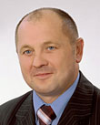

2026-08-06
Projekt wpłynął do Sejmu Druk nr 3004 ↗
w-tokuustawaIII czytanie na posiedzeniu Sejmu (2026-11-19)Sejm 10/3004
| Proces | Sejm kadencja 10, nr 3004 |
|---|---|
| Wpłynął | 2026-08-06 |
| Ostatnia zmiana źródła | 2026-11-19 |
| RCL | legislacja.rcl.gov.pl ↗ |
| Źródło | api.sejm.gov.pl ↗ |
429 zdarzeń

10. kadencja, 65. posiedzenie, 4. dzień - Sekretarz Stanu w Ministerstwie Sprawiedliwości Arkadiusz Myrcha 10. kadencja, 65. posiedzenie, 4. dzień (18-09-2026) 51. punkt porządku dziennego: Pierwsze czytanie rządowego projektu ustawy o zmianie ustawy o Krajowym Rejestrze Sądowym oraz niektórych innych ustaw (druk nr 3004). Sekretarz Stanu w Ministerstwie Sprawiedliwości Arkadiusz Myrcha: Dziękuję. Pani Marszałek! Wysoka Izbo! Bardzo często myśląc o reformowaniu, usprawnianiu wymiaru sprawiedliwości, w pierwszej kolejności myślimy o projektach bardzo dużych, często społecznie chodliwych, w dyskusji publicznej, czyli o cyfryzacji, o pewnych zmianach w zakresie procedury. Ale jest też szereg postępowań, o których mówi się czasami trochę rzadziej, a które tak samo rzutują na sprawność postępowania i, co więcej, bardzo mocno wpływają i kształtują chociażby obrót gospodarczy czy zakres funkcjonowania organizacji pozarządowych. Już kolejny raz w tej kadencji mamy przyjemność mówić o zmianach w zakresie Krajowego Rejestru Sądowego, który od wielu lat ulega takim bardzo pozytywnym zmianom. Przypomnijmy: Krajowy Rejestr Sądowy jest to rejestr, który gromadzi informacje w rejestrach zarówno dotyczących przedsiębiorców, czyli wszystkich tych spółek, które wymagają wpisu do KRS-u, począwszy od spółek osobowych, jawnych, aż po wszystkie spółki kapitałowe, jak i oczywiście organizacji pozarządowych. O Krajowym Rejestrze Sądowym mieliśmy okazję rozmawiać w tej Izbie chociażby podczas omawiania projektów cyfryzujących ten obszar organizacji pozarządowych i w jakimś sensie dopełniających funkcjonowanie tego rejestru w postaci cyfrowej. Mówiliśmy o nim, gdy wprowadzaliśmy przepisy umożliwiające korzystanie z Krajowego Rejestru Sądowego za pośrednictwem aplikacji mObywatel, co spotkało się z szerokim i dobrym odbiorem i funkcjonuje już od kilku miesięcy. Zmiana, którą dzisiaj przedkładamy, jest natomiast taką dość szeroką zmianą, porządkującą i dopinającą niektóre kwestie w pewnych obszarach oraz, co najważniejsze, usprawniającą funkcjonowanie sądownictwa rejestrowego, zwłaszcza w obszarze oddziałującym na życie gospodarcze. Ta dość szeroka zmiana reguluje dwa zasadnicze postępowania, które toczą się w ramach postępowań rejestrowych. Chodzi o postępowania przymuszające oraz postępowania związane z rozwiązaniem czy wykreśleniem spółki i przeprowadzeniem postępowania likwidacyjnego. To jest oczywiście zasadnicza część tego projektu, do czego zaraz wrócę. Przy okazji dokonujemy szeregu porządkujących zmian, chociażby w zakresie jeszcze funkcjonujących przepisów regulujących wnoszenie w formie papierowej pism już procesowych w postępowaniu rejestrującym, a także innych zmian, pomniejszych, ale znaczących w tym aspekcie. Pozwólcie państwo, że w pierwszej kolejności wrócę do chyba najistotniejszego elementu tego projektu, czyli uporządkowania postępowania przymuszającego w zakresie, w jakim dotyczy on obowiązku corocznego składania do sądu rejestrowego dokumentacji finansowej. Być może niektórym z państwa mogłoby się wydawać, że mówimy o jakimś zjawisku czy problemie, który jest śladowy, niewielki, może nie ma większego znaczenia dla funkcjonowania sądownictwa rejestrowego. Otóż nie, niestety każdego roku postępowań przymuszających w sądach rejestrowych jest ponad 100 tys., często blisko ponad 200 tys., z czego lwia część zdecydowanie dotyczy postępowań wynikających z braku wypełnienia obowiązku w postaci złożenia dokumentacji czy sprawozdań finansowych przez podmioty do tego zobowiązane. Dlaczego to jest istotne? Krajowy Rejestr Sądowy ma nie tylko znaczenie porządkujące - że jest jedno miejsce, gdzie gromadzone są wszystkie informacje na temat podmiotów, co do których wymagany jest wpis do rejestru - ale ma też przede wszystkim charakter gwarancyjny, czyli jest to domniemanie prawdziwości i wiarygodności wszystkich informacji. Dane, które znajdują się w Krajowym Rejestrze Sądowym, często są pierwszym źródłem informacji o spółkach, o podmiot
10. kadencja, 65. posiedzenie, 4. dzień - Poseł Maciej Tomczykiewicz 10. kadencja, 65. posiedzenie, 4. dzień (18-09-2026) 51. punkt porządku dziennego: Pierwsze czytanie rządowego projektu ustawy o zmianie ustawy o Krajowym Rejestrze Sądowym oraz niektórych innych ustaw (druk nr 3004). Poseł Maciej Tomczykiewicz: Dziękuję bardzo. Pani Marszałek! Panie Ministrze! Czuję się tak, jakbym miał tu dzisiaj namiot rozstawić, bo przez te ostatnie parę godzin jest tu intensywnie, a to nie koniec. Żeby nie strzępić języka, bo pan minister przedstawił esencję tego projektu, powiem, że to jest kolejny projekt właśnie z serii tych, które biorą to, co mamy, i poprawiają to, czynią lepszym. Jednym z problemów Krajowego Rejestru Sądowego był brak przejrzystości w tym zakresie, w którym spółki mają obowiązek raportowania. Po cóż jest bowiem Krajowy Rejestr Sądowy? Przede wszystkim on nie jest dla samej spółki. Nawet nie jest specjalnie dla państwa. On jest po to, żeby wszystkie inne podmioty na polskim rynku były w stanie sprawdzić, czy spółka istnieje, i by mogły sprawdzić podstawowe informacje o niej. Fajnie by było, żeby jedną z takich podstawowych informacji było to, czy ta spółka składa sprawozdania. Jak już wspomniał pan minister, nie chodzi o to, żeby żądać tych sprawozdań czy karać za ich niezłożenie. Dla kogo one są? One są po to, żeby inne podmioty mogły ocenić, czy ta spółka jest rzetelna, czy warto z nią współpracować, czy wszystko jest okej. Jeżeli tego nie ujawniamy w bardzo dostępny i prosty sposób w Krajowym Rejestrze Sądowym, to ta funkcja jest spełniana w sposób ograniczony. Natomiast kary, które były dotychczas nakładane, nie były same dla siebie, nie były po to, żeby ściągnąć pieniądze do budżetu, tylko były po to, żeby skłonić podmioty do zamieszczania w Krajowym Rejestrze Sądowym tych wszystkich informacji i do spełniania obowiązków właśnie po to, żeby inni uczestnicy rynku mogli z zaufaniem i dzięki jak najszerszej wiedzy te podmioty skontrolować przed ewentualną współpracą z nimi. To w gruncie rzeczy jest tu regulowane i to jest zmiana w dobrym kierunku. Jestem przekonany, że dzięki tej ustawie będzie szybciej, bezpieczniej i bardziej klarownie dla różnych podmiotów życia publicznego. Klub Koalicji Obywatelskiej w pełni popiera ten projekt ustawy. Bardzo dziękuję. (Oklaski) Przebieg posiedzenia
10. kadencja, 65. posiedzenie, 4. dzień - Poseł Mariusz Gosek 10. kadencja, 65. posiedzenie, 4. dzień (18-09-2026) 51. punkt porządku dziennego: Pierwsze czytanie rządowego projektu ustawy o zmianie ustawy o Krajowym Rejestrze Sądowym oraz niektórych innych ustaw (druk nr 3004). Poseł Mariusz Gosek: Dziękuję. Szanowna Pani Marszałek! Wysoka Izbo! W imieniu Klubu Parlamentarnego Prawo i Sprawiedliwość mam zaszczyt przedstawić stanowisko w sprawie rządowego projektu ustawy o zmianie ustawy o Krajowym Rejestrze Sądowym oraz niektórych innych ustaw. Pan minister wskazał główne cele przedmiotowego projektu ustawy, natomiast pojawiają się wątpliwości, które chciałbym tutaj wskazać. Czy pan minister mógłby je wyjaśnić? Chodzi o ryzyko wykluczenia elektronicznego, jeżeli ktoś nie ma konta, zwrot pisma bez wezwania do uzupełnienia, brak środka odwoławczego jako trzecia wątpliwość w zakresie przedmiotowego projektu i ryzyko pochopnego wykreślenia podmiotu - tu domniemanie bezczynności po 2 miesiącach. Przykład: gdy, nie wiem, wiadomość, e-mail wpada w spam czy w inny sposób, a osoba nie jest skutecznie de facto poinformowana. Czy ewentualnie widzicie państwo możliwość zmiany za pomocą poprawki przedmiotowego zapisu w projekcie ustawy? Dziękuję bardzo. Na chwilę obecną jako Prawo i Sprawiedliwość rozważamy wstrzymanie się nad przedmiotowym projektem ustawy. (Poseł Marcin Józefaciuk: To było szybkie.) Przebieg posiedzenia
10. kadencja, 65. posiedzenie, 4. dzień - Poseł Mirosław Adam Orliński 10. kadencja, 65. posiedzenie, 4. dzień (18-09-2026) 51. punkt porządku dziennego: Pierwsze czytanie rządowego projektu ustawy o zmianie ustawy o Krajowym Rejestrze Sądowym oraz niektórych innych ustaw (druk nr 3004). Poseł Mirosław Adam Orliński: Szanowna Pani Marszałek! Panie Ministrze! Wysoka Izbo! W imieniu Klubu Parlamentarnego Polskie Stronnictwo Ludowe przedstawię nasze stanowisko odnośnie do rządowego projektu ustawy o zmianie ustawy o Krajowym Rejestrze Sądowym oraz niektórych innych ustaw. Rzeczywiście, tak jak pan minister powiedział, zmierzamy w takim kierunku, że jest to kolejny tak naprawdę deregulacyjny projekt, który ma usprawnić ten system. To projekt nie tylko deregulacyjny, ale także informatyzacyjny. Ma ograniczyć obowiązki przedsiębiorców innych podmiotów wpisanych do Krajowego Rejestru Sądowego oraz część pracy wykonywanej obecnie przez sądy rejestrowe. Celem, tak jak było również tutaj powiedziane, jest zmiana sposobu funkcjonowania Krajowego Rejestru Sądowego. Zamiast wymagać od podmiotu wpisanego do tego rejestru zgłaszania każdej zmiany danych, które państwo już posiada w innych rejestrach, powinno być to automatycznie aktualizowane. I rzeczywiście część tych obowiązków ma w ten sposób wyglądać. Ma to zmniejszyć liczbę dokumentów papierowych. Chodzi też o szersze wykorzystanie danych znajdujących się już w rejestrze PESEL. Zmiany w zakresie Krajowego Rejestru Sądowego wydają się zmierzać w pozytywnym kierunku. W Krajowym Rejestrze Sądowym nadal znajdują się podmioty, które formalnie istnieją w tym rejestrze, ale faktycznie nie prowadzą działalności albo od wielu lat nie wykonują obowiązków rejestrowych. Projekt przewiduje uproszczenie postępowań dotyczących takich podmiotów. Ma to znaczenie dla aktualności samego rejestru i jego funkcjonowania. Projekt zakłada uproszczenie procedur związanych również ze składaniem sprawozdań finansowych. To pan minister również w swoim wystąpieniu tutaj podkreślał. Jest to znaczące odciążenie również dla sądów rejestrowych. Z takiego punktu widzenia w imieniu naszego klubu, klubu Polskie Stronnictwo Ludowe, chcę powiedzieć, że wydaje się to projekt bardzo zasadny, deregulacyjny, informatyzacyjny, i będziemy ten projekt popierać. Przebieg posiedzenia
10. kadencja, 65. posiedzenie, 4. dzień - Poseł Witold Tumanowicz 10. kadencja, 65. posiedzenie, 4. dzień (18-09-2026) 51. punkt porządku dziennego: Pierwsze czytanie rządowego projektu ustawy o zmianie ustawy o Krajowym Rejestrze Sądowym oraz niektórych innych ustaw (druk nr 3004). Poseł Witold Tumanowicz: Pani Marszałek! Wysoka Izbo! Krajowy Rejestr Sądowy powinien nadążać za cyfryzacją i potrzebami współczesnego obrotu gospodarczego. Sprawniejsze postępowania, automatyczna wymiana części danych między rejestrami czy uporządkowanie procedur dotyczących podmiotów, które nie wykonują swoich obowiązków, to rozwiązania, które co do zasady mają sens. Problem polega na tym, że przy okazji tej reformy pojawia się sporo nowych obowiązków i wątpliwości. Widać to również po uwagach zgłoszonych do projektu. Federacja Przedsiębiorców Polskich krytykuje przeniesienie na wnioskodawców odpowiedzialności za anonimizację dokumentów. Stowarzyszenie Notariuszy RP zwraca uwagę, że może to paradoksalnie dołożyć pracy również sądom, które będą musiały sprawdzać poprawność tej anonimizacji. Poważnie należy potraktować także zastrzeżenia prezesa UODO dotyczące automatycznej wymiany informacji między rejestrami i gwarancji bezpieczeństwa danych. Z kolei KNF wskazuje na problemy, jakie obowiązek wykazania tytułu prawnego do lokalu może powodować w przypadku przedsiębiorców korzystających z wirtualnych biur. Wątpliwości budzi również rozwiązanie dotyczące obowiązkowego konta w systemie KRS. Jeżeli podmiot go nie założy, korespondencja sądu będzie pozostawiona w aktach ze skutkiem doręczenia. To daleko idąca konsekwencja, dlatego takie przepisy powinny być skonstruowane szczególnie precyzyjnie. Cyfryzacja KRS jest potrzebna i na pewno będziemy ją popierać, ale nie powinna polegać na przenoszeniu kolejnych formalności i ryzyka błędu z administracji na przedsiębiorców. Liczba konkretnych zastrzeżeń zgłoszonych do projektu pokazuje, że część tych rozwiązań na pewno wymaga doprecyzowania. Będziemy patrzeć, jak będzie wyglądał ten druk po pracach w komisji. Dziękuję bardzo. Przebieg posiedzenia
10. kadencja, 65. posiedzenie, 4. dzień - Poseł Marcin Józefaciuk 10. kadencja, 65. posiedzenie, 4. dzień (18-09-2026) 51. punkt porządku dziennego: Pierwsze czytanie rządowego projektu ustawy o zmianie ustawy o Krajowym Rejestrze Sądowym oraz niektórych innych ustaw (druk nr 3004). Poseł Marcin Józefaciuk: Szanowna Pani Marszałek! Wysoka Izbo! Mam kilka pytań: Czy przed uruchomieniem nowych mechanizmów zostanie przeprowadzona pełna ocena skutków dla ochrony danych oraz opublikowane zostaną jednoznaczne zasady sporządzania wyciągów z dokumentów? Jak obowiązek przedstawienia dokumentu potwierdzającego tytuł prawny do lokalu będzie stosowany wobec podmiotów korzystających, np. z biur wirtualnych, przestrzeni współdzielonych albo lokalu użyczonego przez inną osobę? W jaki sposób zostanie zweryfikowana gotowość systemów informatycznych przed wejściem zmian w życie 1 października 2027 r. i w 2028 r.? Dziękuję. Przebieg posiedzenia
10. kadencja, 65. posiedzenie, 4. dzień - Poseł Witold Tumanowicz 10. kadencja, 65. posiedzenie, 4. dzień (18-09-2026) 51. punkt porządku dziennego: Pierwsze czytanie rządowego projektu ustawy o zmianie ustawy o Krajowym Rejestrze Sądowym oraz niektórych innych ustaw (druk nr 3004). Poseł Witold Tumanowicz: Pani Marszałek! Wysoka Izbo! Panie Ministrze! KNF zwróciła uwagę, że obowiązek wykazania tytułu prawnego do lokalu może powodować problemy dla przedsiębiorców korzystających z wirtualnych biur. Czy umowa z wirtualnym biurem będzie jednoznacznie uznawana za wystarczający dokument potwierdzający prawo do korzystania z danego adresu? Dziękuję. Przebieg posiedzenia
10. kadencja, 65. posiedzenie, 4. dzień - Sekretarz Stanu w Ministerstwie Sprawiedliwości Arkadiusz Myrcha 10. kadencja, 65. posiedzenie, 4. dzień (18-09-2026) 51. punkt porządku dziennego: Pierwsze czytanie rządowego projektu ustawy o zmianie ustawy o Krajowym Rejestrze Sądowym oraz niektórych innych ustaw (druk nr 3004). Sekretarz Stanu w Ministerstwie Sprawiedliwości Arkadiusz Myrcha: Dziękuję. Pani Marszałek! Wysoka Izbo! Jeżeli chodzi o kilka pytań, które pojawiły się, jak rozumiem, odnośnie do co do zasady pozytywnie ocenianego projektu, to mam nadzieję, że uda się te wątpliwości rozwiać. Jeśli pytacie państwo o umowy najmu, które należy dołączać przy wnioskach kierowanych do KRS-u - to jest zresztą powrót do regulacji, które kiedyś obowiązywały - tak żeby było faktyczne potwierdzenie, że ktoś dysponuje tytułem do danego lokalu, to nie ma znaczenia, czy to jest lokal fizyczny, czy biuro wirtualne. Zawsze korzystanie z tego typu powierzchni, nawet wirtualnej, wynika z zawartej z właścicielem umowy. Z punktu widzenia sądu rejestrowego nie ma znaczenia, jakiego rodzaju to będzie biuro. Najważniejsze jest to, że umowa potwierdza realność takiego korzystania, a jest to niezbędne o tyle, że ostatnie lata pokazują, że brak pełnych, rzetelnych, aktualnych danych adresowych wymusza na wielu instytucjach państwowych prowadzenie postępowań przymuszających w celu ustalenia adresu danej siedziby, co rodzi liczne kłopoty. Wydaje się, że ten nie bardzo kłopotliwy obowiązek powinien rozwiązać kilka praktycznych problemów. Jeżeli chodzi o kwestię nałożenia obowiązku anonimizowania dokumentów kierowanych do sądu rejestrowego, to przede wszystkim będzie to dotyczyło tylko i wyłącznie tych danych, które nie podlegają publikacji w Krajowym Rejestrze Sądowym, i tylko tych, co do których ewentualnie można by mieć dostęp w wyniku dostępu do akt rejestrowych. Nie ma bowiem uzasadnienia to, żeby dane osobowe, które nie muszą być jawne z punktu widzenia Krajowego Rejestru Sądowego, były dostępne dla każdego, kto przegląda Krajowy Rejestr Sądowy. W związku z tym w tym zakresie jest nałożony obowiązek dostarczenia dokumentu zanonimizowanego albo wyciągu z takiego dokumentu, który zapewni, tak jak w wielu innych obszarach, ochronę naszych danych osobowych. Jeżeli chodzi o inne pytanie z tego obszaru i kwestie ochrony czy narażenia danych z uwagi na połączenie rejestrów, to w tym obszarze zmian czy jakichś ryzyk nie identyfikujemy. Wydaje się, że w tym obszarze żadne dobro nie będzie naruszone. Odpowiadając na pytanie pana posła Goska w zakresie cyfryzacji czy ewentualnego wykluczenia, przypomnę, że Krajowy Rejestr Sądowy, przede wszystkim w zakresie rejestru przedsiębiorców, jest cyfrowy od 2021 r. On już funkcjonuje w postaci cyfrowej. Wspomniałem o tym w pierwszym wystąpieniu, mówiąc o obowiązku prowadzenia kont. Być może nie wypowiedziałem się precyzyjnie. Nastąpi tylko pewna modyfikacja: to będą już nie tylko konta osób fizycznych, które są związane z tym podmiotem, ale będzie też możliwość prowadzenia tzw. kont podmiotów. Dla samego obrotu gospodarczego, dla samych spółek te rozwiązania nie będą niczym nowym, bo już od ponad 5 lat rejestr przedsiębiorców funkcjonuje tylko w tej warstwie cyfrowej. Dziękuję. Wicemarszałek Dorota Niedziela: Panie ministrze, jeżeli mogę, zadam pytanie. Czy w przypadku gdy skończy się czas obowiązywania umowy czasowej, ktoś będzie to sprawdzał i powiadamiał o aktualizacji, czy ten obowiązek spoczywa na tym, kto daje tę umowę? Sekretarz Stanu w Ministerstwie Sprawiedliwości Arkadiusz Myrcha: Dziękuję, pani marszałek, za pytanie. Każdorazowo na podmiotach, które podlegają obowiązkowi wpisu do rejestru, spoczywa także obowiązek aktualizowania wszelkich danych, które są ujawniane w Krajowym Rejestrze Sądowym. Jeżeli z jakichś przyczyn taki obowiązek nie jest wypełniany - jak wspomniany już dzisiaj obowiązek przedkładania dokumentów finansowych - to po stronie sądu rodzi to zawsze możliwość wszczęcia postępo
10. kadencja, 69. posiedzenie, 1. dzień - Poseł Sprawozdawca Katarzyna Kierzek-Koperska 10. kadencja, 69. posiedzenie, 1. dzień (17-11-2026) 4. punkt porządku dziennego: Sprawozdanie Komisji do Spraw Deregulacji oraz Komisji Sprawiedliwości i Praw Człowieka o rządowym projekcie ustawy o zmianie ustawy o Krajowym Rejestrze Sądowym oraz niektórych innych ustaw (druki nr 3004 i 3252). Poseł Sprawozdawca Katarzyna Kierzek-Koperska: Szanowny Panie Marszałku! Wysoka Izbo! Zmiany wprowadzone do ustawy o Krajowym Rejestrze Sądowym, KRS, w latach 2014-2018 usprawniły funkcjonowanie rejestru, w tym dzięki wykorzystaniu narzędzi informatycznych. Doświadczenia związane ze stosowaniem tych przepisów wykazały jednak, że część rozwiązań nie zapewnia wystarczającej skuteczności, a prowadzone na ich podstawie postępowania nadmiernie obciążają sądy rejestrowe. Dotyczy to przede wszystkim egzekwowania obowiązku składania dokumentów finansowych oraz rozwiązywania i wykreślania z KRS-u podmiotów, które nie prowadzą już działalności. Projektowana ustawa ma poprawić aktualność i wiarygodność danych rejestrowych, ograniczyć zbędne czynności i koszty postępowań oraz zwiększyć bezpieczeństwo obrotu. Służą temu zmiany w postępowaniach przymuszających i procedurze rozwiązania podmiotów bez likwidacji. Projekt określa zasady przechowywania papierowych dokumentów dotyczących podmiotu przed jego pierwszym wpisem do KRS-u. Do czasu rejestracji będą one gromadzone w zbiorze dokumentów danej sprawy, a następnie dołączane do właściwego zbioru dokumentów podmiotu. Doprecyzowano też reguły wydawania kopii i odpisów oraz sposób ograniczenia dostępności dokumentów. Dla ochrony prywatności i zachowania ograniczeń wynikających z przepisów szczególnych wyłączona zostanie powszechna dostępność informacji otrzymanych z Krajowego Rejestru Karnego. Dotychczasowe postępowania przymuszające są pracochłonne i często nieskuteczne. Grzywny bywają nieegzekwowalne, zwłaszcza wobec podmiotów bez majątku i faktycznej aktywności. Według danych przywołanych w projekcie sprawy dotyczące niezłożenia dokumentów finansowych stanowią ok. 80% wszystkich postępowań przymuszających oraz ok. 1/3 niezakończonych spraw w sądach rejestrowych. Jednocześnie brak w KRS wyraźnej informacji, że podmiot ignoruje wezwania sądu, utrudnia kontrahentom ocenę jego wiarygodności. Projekt doprecyzowuje, że zobowiązanym do złożenia wniosku lub dokumentów, a tym samym adresatem grzywny jest podmiot podlegający wpisowi do KRS, nie zaś automatycznie członkowie jego organów. Istotną nowością będzie ujawnianie w dziale 1 KRS wzmianki, że podmiot nie złożył wymaganych dokumentów finansowych mimo wezwania. Tego do tej pory nie było. Jedno wezwanie wskaże zarówno możliwość nałożenia grzywny, jak i wpisania wzmianki. Informacja ta, co jest istotne, będzie ostrzegać uczestników obrotu, a jednocześnie motywować do wykonania obowiązków. Utrzymana pozostanie odpowiedzialność karna za niewykonanie obowiązku sprawozdawczego. Jeżeli przez rok od wpisania wzmianki podmiot nadal nie złoży kompletu dokumentów, możliwe będzie wszczęcie postępowania o jego rozwiązanie bez likwidacji, chyba że z akt wynika, iż prowadzi działalność lub posiada zbywalny majątek. Obecna procedura usuwania z KRS nieaktywnych podmiotów jest długotrwała, kosztowna i niejednolicie stosowana. Sądowi trudno bowiem mieć całkowitą pewność, że podmiot nie posiada majątku i nie prowadzi działalności, a informacje uzyskiwane od organów publicznych bywają niepełne. Projekt porządkuje postępowanie dowodowe. Co do zasady sąd będzie występował o dane do właściwego naczelnika urzędu skarbowego i ZUS oraz sprawdzał KRS, księgi wieczyste, rejestr zastawów i centralną ewidencję pojazdów. Organy mają udzielać informacji i przekazywać dokumenty dotyczące majątku oraz faktycznej aktywności podmiotu. Przewiduje się domniemanie, że podmiot nie posiada zbywalnego majątku i nie prowadzi działalności, jeśli w ciągu 2 miesięcy od ogłoszenia o wszczęciu postępowania
10. kadencja, 69. posiedzenie, 1. dzień - Poseł Maciej Tomczykiewicz 10. kadencja, 69. posiedzenie, 1. dzień (17-11-2026) 4. punkt porządku dziennego: Sprawozdanie Komisji do Spraw Deregulacji oraz Komisji Sprawiedliwości i Praw Człowieka o rządowym projekcie ustawy o zmianie ustawy o Krajowym Rejestrze Sądowym oraz niektórych innych ustaw (druki nr 3004 i 3252). Poseł Maciej Tomczykiewicz: Dziękuję. Panie Marszałku! Wysoka Izbo! Przedłożony projekt pokazuje z jednej strony już takie domknięcie przejścia na świat cyfrowy w zakresie Krajowego Rejestru Sądowego - w pełni cyfrowe konta podmiotów w całym systemie KRS i pełna elektronizacja postępowania rejestrowego. Z drugiej strony wykorzystujemy tę elektronizację do tego, żeby zsynchronizować KRS z systemem PESEL i ściągać stamtąd potrzebne dane, np. o osobach zasiadających w organach czy o ich śmierci. Zmieniamy tym projektem filozofię podejścia do przedkładania dokumentów finansowych w KRS. Dotąd państwo nakładało kary finansowe na te podmioty, które nie złożyły stosownych sprawozdań. Natomiast był to sposób bardzo często mało skuteczny. Było dużo problemów z egzekwowaniem tych kar. Często ciężko było znaleźć osoby, które te kary mają zapłacić. A jak już nawet udało się je znaleźć, to one nie były w stanie tych kosztów pokryć. Natomiast nie zmieniało to najważniejszej rzeczy, czyli takiej, że w KRS nie było stosownego sprawozdania finansowego i de facto funkcjonowała tam martwa spółka. Najważniejszym zadaniem KRS jest informacja, żeby każdy obywatel, każdy przedsiębiorca mógł, zaglądając do KRS, sprawdzić swojego kontrahenta i być pewnym co do podstawowych informacji, w tym tych zawartych w sprawozdaniu finansowym. I tutaj jest nowe rozwiązanie, w przypadku którego przy braku złożenia stosownych dokumentów jest odnotowywana w systemie wzmianka, która jest widoczna dla wszystkich, którzy do tego systemu zaglądają. Dopóki te dokumenty nie zostaną uzupełnione, ta ostrzegawcza wzmianka tam funkcjonuje. Jest takim bardzo wyraźnym sygnałem dla wszystkich, którzy sprawdzają ten podmiot, że coś jest nie tak. To rozwiązanie, które pozwoli nam, kolokwialnie rzecz ujmując, oczyścić ten Krajowy Rejestr Sądowy z martwych podmiotów, których tam bardzo wiele zalega. Po wpisaniu właśnie takiej wzmianki o braku złożenia stosownych dokumentów finansowych, po roku od wpisania tej wzmianki, jeżeli dany podmiot nie uzupełni tych dokumentów, ten podmiot zostanie po prostu wykreślony. W ten sposób doprowadzimy, w mojej opinii, do oczyszczenia tego systemu właśnie z dużej ilości martwych podmiotów. Klub Koalicji Obywatelskiej jak najbardziej popiera ten projekt. Składamy w tej sprawie, panie marszałku, cztery poprawki. Dziękuję. (Oklaski) Przebieg posiedzenia
10. kadencja, 69. posiedzenie, 1. dzień - Poseł Mariusz Gosek 10. kadencja, 69. posiedzenie, 1. dzień (17-11-2026) 4. punkt porządku dziennego: Sprawozdanie Komisji do Spraw Deregulacji oraz Komisji Sprawiedliwości i Praw Człowieka o rządowym projekcie ustawy o zmianie ustawy o Krajowym Rejestrze Sądowym oraz niektórych innych ustaw (druki nr 3004 i 3252). Poseł Mariusz Gosek: Dziękuję pięknie. Panie Marszałku! Wysoka Izbo! Panie Ministrze! W imieniu Klubu Parlamentarnego Prawo i Sprawiedliwość mam zaszczyt przedstawić stanowisko w sprawie rządowego projektu nowelizacji ustawy o Krajowym Rejestrze Sądowym. To prawda, co tutaj usłyszeliśmy, że sprawny KRS ma znaczenie dla każdego, kto zakłada spółkę, prowadzi stowarzyszenie, ale też tego, kto sprawdza, kto może podpisać umowę w imieniu kontrahenta. Mniej zbędnych dokumentów, szybsze wpisy i sprawniejsza praca sądów rejestrowych to cele, które popieramy. O jakości tej ustawy zdecyduje jednak również to, co stanie się w razie błędu, awarii albo sporu o dane ujawnione w rejestrze. W tych sprawach jako klub Prawa i Sprawiedliwości, oczekujemy od rządu konkretnych odpowiedzi. Po pierwsze, kwestia doręczenia. Projekt przewiduje, że w określonych przypadkach po uprzednim pouczeniu podmiotu, dla którego nie założono konta w systemie, pismo można pozostawić w aktach ze skutkiem doręczenia. Termin może więc zacząć biec, choć adresat fizyczny pisma nie przeczytał. Osobny problem powstaje wtedy, gdy konto już jest, ale użytkownik traci do niego dostęp albo system ulega awarii. Panie ministrze, jak przedsiębiorca lub stowarzyszenie wykażą w sądzie, że w ostatnim dniu terminu system byli niedostępni? Czy będą mogli uzyskać potwierdzenie awarii obejmujące konkretną datę i godzinę? Ile czasu w praktyce zajmie odzyskanie dostępu do konta? Po drugie, dane z rejestru PESEL. Przekazywanie informacji między rejestrami może ograniczyć liczbę wniosków i przyspieszyć aktualizację danych. Błąd w danych źródłowych może jednak przełożyć się na treść wpisu w Krajowym Rejestrze Sądowym. Dla spółki ma to praktyczne znaczenie, gdy bank lub kontrahent sprawdza dane osobę uprawnionej do jej reprezentowania. Kto w takiej sytuacji przyjmie zgłoszenie? Jak szybko sąd będzie mógł skorygować wpis? Czy zainteresowany dostanie informację o zmianie na tyle wcześnie, żeby zareagować przed podpisaniem umowy? Po trzecie, publiczna wzmianka o niezłożeniu dokumentów finansowych. Projekt przewiduje, że po bezskutecznym upływie terminu wyznaczonego w wezwaniu sąd wpisze wzmiankę z urzędu, a następnie zawiadomi właściwy organ o podejrzeniu popełnienia czynu zabronionego. Taki wpis ma znaczenie dla kontrahentów, banków i instytucji finansujących. Jeżeli jednak wzmianka pojawi się wskutek błędu, podmiot może stracić finansowanie albo kontrakt, zanim sprawa zostanie wyjaśniona. Pytamy zatem o tryb szybkiego sprostowania wpisu i o to, jak informacja o błędzie dotrze do organu, który otrzymał zawiadomienie. Po czwarte, wykreślenie podmiotów bez likwidacji, o czym wspominał przed chwilą poseł, przedstawiając sprawozdanie w imieniu klubu Koalicji Obywatelskiej. Ale trzeba zauważyć, że rejestr ma porządkować. A w projekcie przewiduje się, że przy badaniu, czy podmiot ma zbywalny majątek, czy faktycznie działa, sąd będzie korzystał m.in. z danych urzędu skarbowego, z bazy ZUS oraz innych publicznych rejestrów. Wyobraźmy sobie taki kazus, taki przypadek, taką spółkę, której istotnym składnikiem majątku jest niezapłacona faktura. Takiej wierzytelności sąd nie znajdzie w księdze wieczystej ani w ewidencji, np. pojazdów. Jak w praktyce zatem sąd ustali, czy ta wierzytelność istnieje? Jaką realną możliwość zgłoszenia swoich praw będzie miał wierzyciel, zanim podmiot zostanie wykreślony? Te pytania mają znaczenie również dla małych stowarzyszeń, które faktycznie działają, choć zalegają z aktualizacją wpisu. Po piąte, skuteczność postępowania przymuszającego. Projekt przewiduje odstąpienie od nałożenia grzywny, jeżeli z akt wynik
10. kadencja, 69. posiedzenie, 1. dzień - Poseł Mirosław Adam Orliński 10. kadencja, 69. posiedzenie, 1. dzień (17-11-2026) 4. punkt porządku dziennego: Sprawozdanie Komisji do Spraw Deregulacji oraz Komisji Sprawiedliwości i Praw Człowieka o rządowym projekcie ustawy o zmianie ustawy o Krajowym Rejestrze Sądowym oraz niektórych innych ustaw (druki nr 3004 i 3252). Poseł Mirosław Adam Orliński: Szanowny Panie Marszałku! Wysoka Izbo! Szanowni Państwo! W imieniu Klubu Parlamentarnego Polskie Stronnictwo Ludowe przedstawiam nasze stanowisko odnośnie do rządowego projektu ustawy o Krajowym Rejestrze Sądowym oraz niektórych innych ustaw. I rzeczywiście, tak jak było już tutaj powiedziane, kiedy ten projekt był prezentowany, głównym jego zdaniem jest zmniejszenie obciążeń administracyjnych związanych z funkcjonowaniem Krajowego Rejestru Sądowego. Dzięki automatyzacji, informatyzacji procesów i stworzeniu automatycznej aktualizacji danych z rejestru PESEL ograniczy również liczbę dokumentów papierowych i czynności kancelaryjnych, uprości zasady składania sprawozdań finansowych, usprawni pracę sądów rejestrowych. To wszystko wpisuje się w szerokie spektrum działań deregulacyjnych rządu, które tutaj sukcesywnie są przedstawiane i proponowane. Analiza obowiązującego prawa pokazała, gdzie jest potrzeba interwencji legislacyjnej i dostosowania do możliwości organizacyjno-finansowych sądów rejestrowych. Zmiana przepisów dotyczy akt spraw rejestrowych: doprecyzowanie zasad przechowywania dokumentacji papierowej przed dokonaniem wpisu do rejestru, uregulowanie sposobu dołączania akt rejestrowych do zbioru dokumentów po dokonaniu wpisu, uwzględnienie cyfryzacji akt rejestrowych i dostosowanie przepisów do funkcjonowania systemu teleinformatycznego. Szereg zmian, które tutaj są proponowane, ma na celu zwiększenie przejrzystości i spójności procedur rejestrowych, usprawnienie pracy sądów rejestrowych poprzez jednoznaczne określenie zasad gromadzenia i udostępniania dokumentacji, dostosowanie przepisów do cyfrowego obiegu dokumentów, poprawę efektywności postępowań rejestrowych. Zmiana przepisów dotyczy też postępowań związanych ze złożeniem dokumentów finansowych: odpowiednie zmiany w ustawie o KRS, dostosowanie do wymagań społeczno-gospodarczych, zwiększenie wiarygodności danych w Krajowym Rejestrze Sądowym. Wprowadzane przedmiotowym projektem zmiany wpłyną na zmniejszenie obciążeń administracyjnych poprzez automatyzację procesów, elektronizację komunikacji, usprawnienie procedur i postępowań, także związanych z podmiotami martwymi, o czym mówił tutaj poseł Tomczykiewicz - modyfikacja nieefektywnego mechanizmu nakładania i egzekwowania grzywien, koniec corocznych postępowań przymuszających dotyczących sprawozdań finansowych. Podsumowując: rządowy projekt wydaje się jak najbardziej zasadny, idzie w kierunku usprawnienia, cyfryzacji, pewnego dostosowania tych wszystkich przepisów. Jako Klub Parlamentarny Polskie Stronnictwo Ludowe popieramy właśnie takie działania deregulacyjne rządu, bo one służą usprawnieniu całego tego procesu. (Oklaski) Przebieg posiedzenia
10. kadencja, 69. posiedzenie, 1. dzień - Poseł Witold Tumanowicz 10. kadencja, 69. posiedzenie, 1. dzień (17-11-2026) 4. punkt porządku dziennego: Sprawozdanie Komisji do Spraw Deregulacji oraz Komisji Sprawiedliwości i Praw Człowieka o rządowym projekcie ustawy o zmianie ustawy o Krajowym Rejestrze Sądowym oraz niektórych innych ustaw (druki nr 3004 i 3252). Poseł Witold Tumanowicz: Panie Marszałku! Wysoka Izbo! Na zmiany w funkcjonowaniu Krajowego Rejestru Sądowego czekano od dawna. Dzisiaj wykreślenie z rejestru podmiotu, który od lat nie prowadzi działalności i nie posiada majątku, potrafi być procesem długim i skomplikowanym. Sądy prowadzą kolejne postępowania, nakładają grzywny, których często nie da się wyegzekwować, a taki podmiot nadal figuruje w rejestrze. Dlatego dobrze, że wreszcie próbujemy ten problem rozwiązać. Pozytywnie oceniamy przede wszystkim uproszczenie procedury wykreślania nieaktywnych podmiotów z KRS. Jeżeli spółka faktycznie nie działa i nie ma majątku, nie ma powodu, żeby jej wykreślenie wymagało prowadzenia kolejnych, często bezskutecznych postępowań. To pozwoli odciążyć sądy, ale też uporządkować sam rejestr, który powinien zawierać aktualne i wiarygodne informacje. Dobrym rozwiązaniem jest również ograniczenie wielokrotnego wszczynania postępowań wobec podmiotów, które nie składają sprawozdań finansowych. Zamiast nakładać kolejne, nieściągalne grzywny, sąd będzie mógł ujawnić w rejestrze informację o niewykonywaniu tego obowiązku. To bardziej przejrzyste i praktyczne rozwiązanie. Natomiast mamy kilka uwag. Pierwsza dotyczy obowiązkowych kont elektronicznych do kontaktu z sądem rejestrowym. Sama cyfryzacja jest potrzebna, ale trzeba uważać, żeby zwykły błąd techniczny nie prowadził do zbyt daleko idących konsekwencji. Druga kwestia to obowiązek przedstawiania dokumentu potwierdzającego prawo do lokalu przy rejestracji lub zmianie adresu. Rozumiemy potrzebę walki z fikcyjnymi adresami, ale przepisy nie powinny utrudniać legalnego korzystania z wirtualnych biur, z których korzysta wielu przedsiębiorców. Wątpliwości budzi również przeniesienie na wnioskodawców obowiązku przygotowywania dokumentów z pominięciem danych chronionych. Trzeba zadbać o to, żeby uproszczenie pracy sądów nie oznaczało po prostu przerzucania kolejnych formalności na przedsiębiorców. Wysoka Izbo! Pomimo tych uwag kierunek zmian oceniamy pozytywnie. Krajowy Rejestr Sądowy powinien być sprawny, aktualny i wiarygodny, a procedury rejestrowe nie powinny ciągnąć się latami bez żadnego rezultatu. To potrzebna i długo oczekiwana nowelizacja. Dziękuję bardzo. Przebieg posiedzenia
10. kadencja, 69. posiedzenie, 1. dzień - Poseł Aleksandra Leo 10. kadencja, 69. posiedzenie, 1. dzień (17-11-2026) 4. punkt porządku dziennego: Sprawozdanie Komisji do Spraw Deregulacji oraz Komisji Sprawiedliwości i Praw Człowieka o rządowym projekcie ustawy o zmianie ustawy o Krajowym Rejestrze Sądowym oraz niektórych innych ustaw. Poseł Aleksandra Leo: Panie Marszałku! Wysoka Izbo! Krajowy Rejestr Sądowy pomaga sprawdzić, z kim zawieramy umowę i kto odpowiada za działalność firmy czy organizacji. Żeby dobrze spełniał tę funkcję, musi zawierać aktualne dane i być czytelny dla osób, które z niego korzystają. Projekt z druku nr 3004 wprowadza zmiany w kilku ważnych obszarach jego działania. Druk nr 3252 zawiera z kolei sprawozdanie komisji, która rekomenduje uchwalenie projektu. Zacznę od dokumentów finansowych. Jeśli podmiot nie składa ich w terminie, w rejestrze pojawi się informacja o zaległościach. Dzięki temu osoby sprawdzające firmę będą wiedziały, że dostępne dane mogą nie dawać pełnego obrazu jej sytuacji. Po uzupełnieniu wymaganych dokumentów wzmianka zostanie usunięta. Projekt ma też pomóc w uporządkowaniu rejestru. Są w nim podmioty, które od dawna nie prowadzą działalności i nie mają majątku, a mimo to nadal widnieją w KRS. Zanim sąd zdecyduje o ich wykreśleniu, będą miały możliwość wykazania, że nadal działają lub posiadają majątek. To ważne, bo porządkowanie rejestru nie może prowadzić do usunięcia aktywnego podmiotu. Kolejna część zmian dotyczy kontaktu z sądem. Podmioty wpisane do KRS będą korzystać z własnych kont elektronicznych, a część danych osób ujawnionych w rejestrze będzie mogła być aktualizowana na podstawie rejestru PESEL. Może to ograniczyć papierową korespondencję i konieczność wielokrotnego przekazywania tych samych informacji. Takie rozwiązania powinny jednak ułatwiać załatwianie spraw, a nie tworzyć nowe bariery. Dlatego ważne będzie, by system był dostępny i zrozumiały także dla mniejszych firm i organizacji, które nie mają własnych działów prawnych, nie mają własnych działów informatycznych. Jasna informacja o obowiązkach i skutkach braku reakcji ma tu szczególne znaczenie. Dobrze prowadzony rejestr to konkretna pomoc dla przedsiębiorców, dla sądów i wszystkich, którzy sprawdzają wiarygodność firm i organizacji. Dlatego popieramy rozwiązania zawarte w tym projekcie. Dziękuję. (Oklaski) Przebieg posiedzenia
10. kadencja, 69. posiedzenie, 1. dzień - Poseł Piotr Górnikiewicz 10. kadencja, 69. posiedzenie, 1. dzień (17-11-2026) 4. punkt porządku dziennego: Sprawozdanie Komisji do Spraw Deregulacji oraz Komisji Sprawiedliwości i Praw Człowieka o rządowym projekcie ustawy o zmianie ustawy o Krajowym Rejestrze Sądowym oraz niektórych innych ustaw. Poseł Piotr Górnikiewicz: Dziękuję, panie marszałku. Wysoka Izbo! Klub Polska 2050 popiera nowelizację ustawy o Krajowym Rejestrze Sądowym w brzmieniu przyjętym przez połączone komisje, druk nr 3252. Projekt trafnie diagnozuje i rozwiązuje problem niewydolnych postępowań przymuszających. Zastąpienie mechanizmu nakładania bezskutecznych grzywien jawną wzmianką w dziale 1 KRS-u o braku dokumentów finansowych to rozwiązanie pragmatyczne. Rynek zyskuje darmową, natychmiastową informację o nierzetelności kontrahenta, a sądy zostają odciążone od bezcelowej biurokracji. Popieramy również ukrócenie patologii związanych z tzw. wirtualnymi biurami. Wprowadzenie wymogu wykazania tytułu prawnego do lokalu przy zgłaszaniu adresu siedziby skutecznie zabezpieczy właścicieli nieruchomości przed bezprawnym wykorzystywaniem ich danych. Prace w komisjach poprawiły jakość przedłożenia. Usunięto ryzykowny automatyzm przy eliminowaniu martwych podmiotów z obrotu, a także zrezygnowano ze sztywnego 2-miesięcznego terminu, po którym z urzędu domniemano brak majątku i działalności spółki. Wykreślenie podmiotu będzie teraz efektem faktycznej oceny jego bierności i ustaleń organów państwowych, a nie wyłącznie mechanicznego upływu czasu. Projekt realizuje słuszne cele deregulacyjne, usprawnia pracę orzeczników i zwiększa pewność obrotu gospodarczego. Szczególnie pozytywnie należy ocenić porządkowanie KRS i walkę z fikcyjnymi podmiotami. Najwięcej uwagi wymaga jednak sposób wdrożenia obowiązkowej cyfryzacji oraz zabezpieczenia przedsiębiorców i organizacji społecznych przed negatywnymi skutkami błędów systemowych. Dlatego klub Polska 2050 będzie głosował za przyjęciem tego projektu. Dziękuję. (Oklaski) Przebieg posiedzenia
| Klub | Za | Przeciw | Wstrz. | Nieobec. |
|---|---|---|---|---|
| KO | 148 | 0 | 0 | 7 |
| P. Adamowicz U. Augustyn S. Bielawska P. Bliźniuk M. Bochenek K. Bojarski P. Borys M. Bosacki M. Chmielewski A. Chybicka J. Cichoń Z. Czernow B. Dolniak A. Domański R. Dowhan M. Filiks J. Frydrych K. Frysztak P. Gabriel K. Gadowski A. Gajewska K. Gajewska E. Gapińska Z. Gawlik E. Gelert A. Gierada R. Giertych W. Giziński M. Golbik S. Gorczyca K. Grabczuk J. Grabiec M. Gromadzka B. Grygorcewicz M. Gzik T. Głogowski P. Głowski K. Habura A. Hanajczyk I. Hartwich M. Hok Ł. Horbatowski K. Jachira R. Jagła M. Janyska M. Jaros P. Jaskulski D. Jazłowiecka D. Jaśkowiec P. Kandyba J. Karnowski I. Karolewska K. Kierzek-Koperska J. Kluzik-Rostkowska Z. Konwiński T. Kostuś U. Koszutska A. Kot P. Kowal I. Kozłowska E. Kołodziej M. Kołodziejczak M. Kołodziejczak M. Koźlakiewicz I. Krawczyk M. Krawczyk R. Kropiwnicki A. Krzemiński H. Krzywonos-Strycharska M. Krząkała K. Królak P. Lachowicz S. Lamczyk M. Lasek G. Lenartowicz I. Leszczyna B. Lisowska K. Lubnauer A. Marchewka D. Marek P. Masełko K. Matusik-Lipiec J. Meysztowicz K. Mieszkowski C. Mroczek A. Myrcha G. Napieralski D. Niedziela J. Niedźwiedzki M. Niemczyk J. Niezgodzka S. Nitras B. Nowacka T. Nowak M. Okła-Drewnowicz P. Olszewski K. Osos P. Papke K. Pawliczak K. Piekarska L. Pietrzczyk K. Piątkowski K. Plocke E. Polak A. Pomaska M. Popielarz M. Pępek R. Rak M. Roguska M. Rosa J. Rutnicki M. Rząsa K. Sibińska R. Siemaszko T. Siemoniak K. Skowrońska W. Smarduch A. Sobolak M. Sowa K. Stachowicz F. Sterczewski P. Suski A. Szewiński H. Szopiński K. Szumilas T. Szymański A. Szłapka W. Sługocki A. Tajner C. Tomczyk M. Tomczykiewicz M. Tracz K. Truskolaski D. Tusk J. Urbaniak A. Uznańska-Wiśniewska R. Wardzała J. Wałęsa M. Wielichowska A. Witczak M. Witczak P. Witek A. Wojciechowska B. Wołoszański M. Wróbel B. Zawieja W. Zembaczyński U. Zielińska A. Łepkowska-Gołaś D. Łoboda M. Łośko A. Łuczak K. Łuczak A. Łącki Ł. Ściebiorowski | ||||
| PiS | 0 | 1 | 125 | 21 |
| A. Adamczyk W. Andzel D. Arciszewska-Mielewczyk I. Arent M. Ast P. Babinetz B. Bartuś R. Bochenek J. Bogucki J. Borowiak K. Bortniczuk B. Borys-Szopa L. Burzyńska M. Błaszczak A. Chojecki K. Choma D. Chorosińska T. Chrzan K. Ciecióra K. Czarnecki W. Czarnecki P. Czarnek A. Czartoryski L. Czechak A. Czerwińska K. Czochara W. Dajczak Z. Dolata B. Dorywalski P. Drabek J. Dziedziczak A. Dąbrowska-Banaszek M. Filipek-Sobczak R. Fogiel A. Gawron G. Gaża A. Gembicka P. Gliński M. Golińska M. Gosek K. Gołojuch M. Grabowski M. Gróbarczyk K. Gwiazdowski A. Górska C. Hoc Z. Hoffmann P. Hreniak M. Jach N. Kaczmarczyk F. Kaczyński J. Kaczyński P. Kaleta S. Kaleta J. Kanthak M. Kałużny A. Kosztowniak H. Kowalczyk M. Kowalski B. Kownacki J. Krajewski L. Krasulski A. Krupka M. Krystian P. Król M. Kuchciński W. Kulpa M. Kurowska W. Kurowski Z. Kuźmiuk E. Leniart J. Lichocka G. Lorek A. Macierewicz E. Malik D. Matecki J. Materna G. Matusiak M. Matuszewski M. Małecki A. Milczanowska D. Milewski J. Mosiński M. Moskal A. Mrówczyński M. Ociepa B. Olbryś J. Osuch A. Paluch T. Pamuła B. Piecha G. Piechowiak A. Pieczarka D. Piontkowski S. Pogoda J. Polaczek P. Polak M. Porzucek K. Płażyński Z. Rau M. Romanowski R. Romanowski U. Rusecka J. Sasin P. Sałek A. Schmidt J. Sellin E. Siarka S. Skwarek K. Smoliński K. Sobolewski A. Soin D. Stefaniuk M. Subocz M. Suski W. Szarama A. Szałabawka J. Szczurek-Żelazko P. Szrot S. Szwed K. Sójka K. Tchórzewski R. Telus P. Uruski M. Warchoł R. Warwas J. Warzecha M. Wassermann R. Weber M. Wesoły P. Wicher J. Wieczorek T. Wilk E. Witek A. Wojciechowska van Heukelom A. Wojtyszek M. Woś G. Woźniak T. Woźniak B. Wróblewski M. Wójcik J. Zieliński T. Zieliński Z. Ziobro S. Łukaszewicz A. Śliwka J. Świat | ||||
| RozwojPlus | 36 | 0 | 0 | 4 |
| A. Baluch R. Bartosik Z. Chmielowiec A. Cicholska J. Cieszyński M. Cieślak E. Duda S. Giżyński R. Gontarz A. Gut-Mostowy M. Gwóźdź M. Horała P. Jabłoński M. Jakubiak F. Kapinos Ł. Kmita M. Koc W. Krajewski A. Kryj K. Kubów A. Kwiecień K. Lipiec M. Machałek G. Macko M. Morawiecki M. Pawłowska G. Puda P. Rychlik Ł. Schreiber O. Semeniuk-Patkowska M. Stachowiak-Różecka K. Szczucki S. Szynkowski vel Sęk R. Terlecki W. Tomaszewski S. Tułajew P. Uściński W. Zubowski I. Zyska A. Ścigaj | ||||
| PSL-TD | 31 | 0 | 0 | 1 |
| W. Bartoszewski P. Bejda M. Biernacki A. Dziedzic A. Grzyb H. Kiepura D. Klimczak W. Kosiniak-Kamysz S. Krajewski A. Kłopotek R. Lubczyk M. Maliszewski U. Nowogórska M. Orliński K. Paszyk U. Pasławska M. Pyrzyk I. Raś J. Rzepa W. Różyński T. Samborski M. Sawicki C. Siekierski H. Smolarz Z. Sosnowski M. Sroka J. Tomczak S. Tomczyszyn P. Zgorzelski Z. Ziejewski J. Zięba-Gzik B. Żelazowska | ||||
| Lewica | 20 | 0 | 0 | 1 |
| B. Borowiec W. Czarzasty J. Czerniak A. Dziemianowicz-Bąk K. Gawkowski D. Gosek-Popiołek K. Kotula P. Kowal A. Kucharska-Dziedzic M. Kulasek W. Nowicka D. Olko A. Sikora W. Szczepański A. Szejna T. Tomaszewski T. Trela K. Ueberhan J. Wicha D. Wieczorek A. Żukowska | ||||
| Konfederacja | 1 | 0 | 14 | 2 |
| K. Berkowicz K. Bosak K. Bosak B. Foltyn S. Mentzen K. Mulawa B. Pejo M. Połuboczek G. Płaczek T. Rzymkowski K. Szymański K. Tuduj W. Tumanowicz M. Wawer R. Wilk P. Wipler A. Zapałowski | ||||
| Centrum | 15 | 0 | 0 | 0 |
| I. Bodnar E. Burkiewicz Ż. Cwalina-Śliwowska P. Hennig-Kloska R. Kasprzyk R. Komarewicz A. Leo B. Okuła B. Oliwiecka R. Petru N. Pietrykowski M. Skonieczka M. Suchoń E. Szymanowska S. Ćwik | ||||
| Polska2050 | 14 | 0 | 0 | 1 |
| A. Buczyńska A. Gomoła M. Gramatyka P. Górnikiewicz B. Hołownia S. Hołownia A. Luboński M. Nowak Ł. Osmalak B. Romowicz E. Schädler P. Strach W. Tomczak K. Wnuk P. Śliz | ||||
| niez. | 4 | 0 | 2 | 2 |
| M. Józefaciuk J. Kowalski W. Król P. Matysiak Ł. Mejza J. Mucha P. Zalewski T. Zimoch | ||||
| Razem | 4 | 0 | 0 | 0 |
| M. Konieczny M. Stożek A. Zandberg M. Zawisza | ||||
| Demokracja | 0 | 0 | 3 | 0 |
| J. Ardanowski P. Kukiz J. Sachajko | ||||
| Konfederacja_KP | 0 | 0 | 3 | 0 |
| R. Fritz W. Skalik S. Zawiślak | ||||
Brak zdarzeń dla wybranych filtrów.
Projekt USTAWA z dnia o zmianie ustawy o Krajowym Rejestrze Sądowym oraz niektórych innych ustaw) Art. 1. W ustawie z dnia 20 sierpnia 1997 r. o Krajowym Rejestrze Sądowym (Dz. U. z 2025 r. poz. 869, z późn. zm.)) wprowadza się następujące zmiany: 1) w art. 3a uchyla się ust. 3; 2) w art. 9: a) po ust. 1a dodaje się ust. 1b w brzmieniu: „1b. Do chwili wpisu podmiotu do Rejestru dokumenty w postaci papierowej przechowuje się w zbiorze dokumentów akt sprawy rozpoznawanej.”, b) w ust. 6 zdanie drugie otrzymuje brzmienie: „Do zbioru dokumentów dołącza się akta rejestrowe podmiotu prowadzone w postaci papierowej lub zbiór dokumentów akt sprawy rozpoznawanej.”; 3) w art. 9a ust. 2 otrzymuje brzmienie: „2. Do repozytorium dokumentów finansowych są składane dokumenty, które na podstawie przepisów ustawy z dnia 29 września 1994 r. o rachunkowości (Dz. U. z 2026 r. poz. 522, 640, 644 i …) podlegają złożeniu we właściwym rejestrze sądowym (dokumenty finansowe).”; 4) w art. 10: a) w ust. 1 wyraz „ustawa” zastępuje się wyrazem „przepis szczególny”, b) ust. 4 otrzymuje brzmienie: „4. Dokument stanowiący podstawę wpisu w dziale 4 rejestru przedsiębiorców, który został wykreślony na podstawie art. 46, udostępnia się wyłącznie przedsiębiorcy, którego ten wpis dotyczył, oraz wierzycielowi, na którego wniosek nastąpiło wykreślenie wpisu. Jeżeli taki dokument ma postać papierową, przenosi się go do prowadzonego oddzielnie zbioru dokumentów.”, c) w ust. 4a w pkt 2 skreśla się wyrazy „ , jeżeli nie stanowią one podstawy rozstrzygnięcia sądu rejestrowego lub dotyczą osób, które nie podlegają wpisowi do Rejestru”, d) dodaje się ust. 7 w brzmieniu: „7. Przepis ust. 6 zdanie drugie stosuje się odpowiednio do zbioru dokumentów, o którym mowa w art. 9 ust. 6.”; 5) w art. 19: a) ust. 2 otrzymuje brzmienie: „2. Wnioski lub inne pisma procesowe dotyczące podmiotu podlegającego obowiązkowi wpisu do rejestru, o którym mowa w art. 1 ust. 2 pkt 1, lub do rejestru, o którym mowa w art. 1 ust. 2 pkt 2, składa się wyłącznie za pośrednictwem systemu teleinformatycznego.”, b) po ust. 2 dodaje się ust. 2a i 2b w brzmieniu: „2a. Podmiot podlegający obowiązkowi wpisu do rejestru, o którym mowa w art. 1 ust. 2 pkt 1, lub do rejestru, o którym mowa w art. 1 ust. 2 pkt 2, dla którego w systemie teleinformatycznym założono konto, o którym mowa w art. 53d ustawy z dnia 27 lipca 2001 r. – Prawo o ustroju sądów powszechnych (Dz. U. z 2024 r. poz. 334, z późn. zm.)), składa wnioski lub inne pisma procesowe za pośrednictwem tego konta, chyba że uprawdopodobni, że złożenie wniosku lub pisma za pośrednictwem założonego dla niego konta nie było możliwe z przyczyn niezależnych od tego podmiotu. W przypadku uprawdopodobnienia przepisu art. 6946 § 4 Kodeksu postępowania cywilnego nie stosuje się. 2b. Podmiot podlegający obowiązkowi wpisu do rejestru, o którym mowa w art. 1 ust. 2 pkt 1, lub do rejestru, o którym mowa w art. 1 ust. 2 pkt 2, dla którego nie założono konta w systemie teleinformatycznym, wraz z wnioskiem o wpis lub zmianę wpisu w Rejestrze zgłasza potrzebę założenia konta.”, c) po ust. 8 dodaje się ust. 8a w brzmieniu: „8a. Wniosek lub inne pismo procesowe złożone z naruszeniem ust. 2a podlegają zwróceniu bez wzywania do uzupełnienia braków. Przepisu art. 6946 § 4 Kodeksu postępowania cywilnego nie stosuje się.”, d) ust. 10 otrzymuje brzmienie: „10. W razie zwrócenia wniosku lub innego pisma procesowego zgodnie z ust. 7–8a mogą być one ponownie złożone w terminie 7 dni od daty doręczenia zarządzenia o zwrocie. Jeżeli wniosek lub inne pismo procesowe ponownie złożone nie zawierają braków, wywołują one skutek od daty pierwotnego wniesienia. Skutek taki nie następuje w razie kolejnego zwrotu wniosku lub innego pisma procesowego, chyba że zwrot nastąpił na skutek braków uprzednio niewskazanych.”; 6) po art. 19a dodaje się art. 19aa i art. 19ab w brzmieniu: „Art. 19aa. 1. Do pisma procesowego lub załączonego do niego dokumentu zawierających dane osobowe lub inne dane, których prawo przeglądania jest ograniczone na podstawie przepisu szczególnego, dołącza się wyciąg z tego pisma procesowego lub dokumentu z pominięciem tych danych. 2. Jeżeli do pisma procesowego lub załączonego do niego dokumentu, o których mowa w ust. 1, nie dołączono wyciągu z tego pisma procesowego lub dokumentu z pominięciem danych osobowych lub innych danych, których prawo przeglądania jest ograniczone na podstawie przepisu szczególnego, albo dane te nie zostały w dołączonym wyciągu pominięte, stosuje się odpowiednio przepisy art. 130 § 1–4 Kodeksu postępowania cywilnego. Art. 19ab. 1. Podmiot podlegający obowiązkowi wpisu do rejestru, o którym mowa w art. 1 ust. 2 pkt 1, lub do rejestru, o którym mowa w art. 1 ust. 2 pkt 2, jest obowiązany posiadać tytuł prawny do korzystania z lokalu (nieruchomości), którego adres zgłosił do Rejestru jako adres siedziby. 2. Do wniosku o wpis lub zmianę adresu siedziby należy dołączyć dokument, z którego wynika tytuł prawny do korzystania z lokalu (nieruchomości), którego adres podmiot zgłosił jako adres siedziby. Przepisu art. 6944 § 23 Kodeksu postępowania cywilnego nie stosuje się.”; 7) art. 19c otrzymuje brzmienie: „Art. 19c. 1. We wniosku o wpis lub zmianę wpisu w rejestrze, o którym mowa w art. 1 ust. 2 pkt 1, dotyczącym nabycia lub objęcia udziałów, akcji lub ogółu praw i obowiązków oraz w przypadku złożenia do akt rejestrowych dokumentów zawierających informacje o zmianach wspólników spółki wnioskodawca zamieszcza oświadczenie, czy nabywca lub obejmujący udziały, akcje lub ogół praw i obowiązków jest cudzoziemcem w rozumieniu ustawy z dnia 24 marca 1920 r. o nabywaniu nieruchomości przez cudzoziemców (Dz. U. z 2017 r. poz. 2278). 2. W przypadku gdy nabywca lub obejmujący udziały, akcje lub ogół praw i obowiązków posiada status cudzoziemca w rozumieniu ustawy z dnia 24 marca 1920 r. o nabywaniu nieruchomości przez cudzoziemców, wnioskodawca we wnioskach, o których mowa w ust. 1, zamieszcza także oświadczenie, czy spółka, której wniosek dotyczy, jest lub z chwilą dokonania wpisu stanie się właścicielem lub wieczystym użytkownikiem nieruchomości położonych na terytorium Rzeczypospolitej Polskiej.”; 8) w art. 19e ust. 1 otrzymuje brzmienie: „1. Złożenie dokumentów finansowych do repozytorium dokumentów finansowych następuje przez zgłoszenie za pośrednictwem systemu teleinformatycznego udostępnionego do tego celu przez Ministra Sprawiedliwości.”; 9) po art. 20f dodaje się art. 20g w brzmieniu: „Art. 20g. 1. Jeżeli dla podmiotu podlegającego obowiązkowi wpisu do rejestru, o którym mowa w art. 1 ust. 2 pkt 1, lub do rejestru, o którym mowa w art. 1 ust. 2 pkt 2, założono konto w systemie teleinformatycznym, sąd rejestrowy przy pierwszym doręczeniu poucza podmiot o treści art. 19 ust. 2a i 8a oraz o treści art. 125 § 21 zdanie drugie i art. 6946 § 4 Kodeksu postępowania cywilnego. 2. Jeżeli dla podmiotu podlegającego obowiązkowi wpisu do rejestru, o którym mowa w art. 1 ust. 2 pkt 1, lub do rejestru, o którym mowa w art. 1 ust. 2 pkt 2, nie założono konta w systemie teleinformatycznym, sąd rejestrowy przy pierwszym doręczeniu poucza podmiot także o treści art. 19 ust. 2b oraz o treści art. 6946 § 5 Kodeksu postępowania cywilnego, a także o sposobie założenia konta w systemie teleinformatycznym i uwierzytelnienia się na tym koncie.”; 10) w art. 21 w ust. 1 wyrazy „rządowej i samorządowej” zastępuje się wyrazem „publicznej”; 11) po art. 21d dodaje się art. 21e–21f w brzmieniu: „Art. 21e. Sąd rejestrowy otrzymuje z Rejestru, za pośrednictwem systemu teleinformatycznego, informacje o wpisie wzmianek wskazanych w art. 40 pkt 2–5d i 7 dla podmiotów, w stosunku do których jest zamieszczona: 1) wzmianka o niewykonywaniu obowiązku złożenia dokumentów finansowych pomimo wezwania sądu lub 2) wzmianka o prowadzeniu postępowania o rozwiązanie podmiotu wpisanego do Rejestru bez przeprowadzania postępowania likwidacyjnego. Art. 21f. Sąd rejestrowy otrzymuje z rejestru PESEL, za pośrednictwem systemu teleinformatycznego, informacje o zmianie imienia, nazwiska lub numeru PESEL osoby fizycznej ujawnionej w Rejestrze lub o zamieszczeniu w rejestrze PESEL informacji o zgonie tej osoby albo o dacie znalezienia jej zwłok.”; 12) w art. 22 po ust. 1 dodaje się ust. 1a w brzmieniu: „1a. Przepis ust. 1 stosuje się odpowiednio do dokumentów, o których mowa w art. 9 ust. 2, co nie uchybia terminom określonym w przepisach szczególnych.”; 13) w art. 24: a) ust. 1–1b otrzymują brzmienie: „1. W przypadku uprawdopodobnienia, że wniosek o wpis do Rejestru lub dokumenty, których złożenie jest obowiązkowe, nie zostały złożone pomimo upływu terminu, sąd rejestrowy wszczyna postępowanie przymuszające i podejmuje niezbędne czynności wyjaśniające. W razie stwierdzenia, że wniosek o wpis do Rejestru lub dokumenty, których złożenie jest obowiązkowe, nie zostały złożone pomimo upływu terminu, sąd rejestrowy wzywa podmiot obowiązany do złożenia odpowiedniego wniosku lub dokumentów – wyznaczając dodatkowy 7-dniowy termin. 1a. W przypadku uprawdopodobnienia, że osoba prawna nie posiada organu uprawnionego do reprezentowania albo że w składzie tego organu zachodzą braki uniemożliwiające jej działanie, sąd rejestrowy wszczyna postępowanie przymuszające i podejmuje niezbędne czynności wyjaśniające. W razie stwierdzenia, że osoba prawna nie posiada organu uprawnionego do reprezentowania albo że w składzie tego organu zachodzą braki uniemożliwiające jej działanie, sąd rejestrowy wzywa obowiązanych do powołania albo wyboru tego organu do: 1) wykazania, że organ został powołany albo wybrany albo że braki w jego składzie zostały usunięte – wyznaczając 7-dniowy termin, albo 2) powołania albo wyboru tego organu albo usunięcia braków w składzie tego organu – wyznaczając odpowiedni termin. 1b. Wezwań, o których mowa w ust. 1 i 1a, sąd rejestrowy dokonuje pod rygorem zastosowania grzywny przewidzianej w przepisach Kodeksu postępowania cywilnego o egzekucji świadczeń niepieniężnych. W przypadku niewykonania obowiązków w terminie sąd rejestrowy nakłada grzywny na obowiązanych. Przepisu art. 1053 Kodeksu postępowania cywilnego nie stosuje się.”, b) po ust. 2 dodaje się ust. 2a–2e w brzmieniu: „2a. Sąd rejestrowy odstępuje od nałożenia grzywny, o której mowa w ust. 1b, jeżeli z danych zawartych w aktach rejestrowych wynika, że egzekucja z majątku obowiązanego może okazać się bezskuteczna, w szczególności jeżeli z danych tych nie wynika, że obowiązany posiada majątek, którego wartość przewyższa wysokość nałożonej na niego grzywny oraz ewentualnych kosztów egzekucyjnych. Odstępując od nałożenia grzywny, sąd wskazuje podstawę faktyczną odstąpienia. Odstąpienie od nałożenia grzywny nie podlega zaskarżeniu. 2b. W przypadku stwierdzenia, że nie zostały złożone dokumenty finansowe, sąd rejestrowy wzywa do złożenia tych dokumentów także pod rygorem wpisu w Rejestrze wzmianki o niewykonywaniu obowiązku złożenia dokumentów finansowych pomimo wezwania sądu oraz poucza o treści ust. 2c–2e. W przypadku niewykonania obowiązku w terminie sąd z urzędu wpisuje do Rejestru wzmiankę o niewykonywaniu obowiązku złożenia dokumentów finansowych pomimo wezwania sądu. 2c. Po wpisaniu do Rejestru wzmianki o niewykonywaniu obowiązku złożenia dokumentów finansowych pomimo wezwania sądu sąd rejestrowy niezwłocznie zawiadamia właściwy organ państwowy o podejrzeniu popełnienia czynu zabronionego, o którym mowa w art. 79 pkt 4 ustawy z dnia 29 września 1994 r. o rachunkowości, i jednocześnie przekazuje mu informację o numerze podmiotu w Rejestrze, sygnaturze sprawy, dacie dokonania wpisu tej wzmianki i numerze wpisu. 2d. Do chwili wykreślenia wzmianki o niewykonywaniu obowiązku złożenia dokumentów finansowych pomimo wezwania sądu nie wszczyna się kolejnych postępowań przymuszających do złożenia dokumentów finansowych. 2e. Sąd rejestrowy wykreśla z urzędu wzmiankę o niewykonywaniu obowiązku złożenia dokumentów finansowych pomimo wezwania sądu w przypadku złożenia wszystkich zaległych dokumentów finansowych, w tym także tych, których obowiązek złożenia powstał po wpisie tej wzmianki.”, c) ust. 3 otrzymuje brzmienie: „3. Sąd rejestrowy odstępuje od postępowania przymuszającego, o którym mowa w ust. 1 lub 1a, jeżeli w wyniku podjęcia czynności wyjaśniających stwierdził, że: 1) wniosek o wpis do Rejestru lub dokumenty, których złożenie jest obowiązkowe, zostały złożone albo 2) z danych zawartych w aktach rejestrowych wynika, że postępowanie przymuszające nie doprowadzi do złożenia wniosku o wpis lub dokumentów, których złożenie jest obowiązkowe, albo 3) z danych zawartych w aktach rejestrowych wynika, że postępowanie przymuszające nie doprowadzi do wykazania okoliczności, o których mowa w ust. 1a pkt 1, albo do wykonania czynności, o których mowa w ust. 1a pkt 2.”, d) po ust. 3 dodaje się ust. 3a w brzmieniu: „3a. W postanowieniu o odstąpieniu od postępowania przymuszającego sąd rejestrowy wskazuje podstawę faktyczną odstąpienia. Postanowienie nie wymaga doręczenia i nie podlega zaskarżeniu.”; 14) w art. 25a: a) w ust. 1: – pkt 3 otrzymuje brzmienie: „3) wydano postanowienie o odstąpieniu od postępowania przymuszającego na podstawie art. 24 ust. 3 pkt 2 albo 3 lub o jego umorzeniu na podstawie art. 24 ust. 4;”, – po pkt 4 dodaje się pkt 4a w brzmieniu: „4a) mimo upływu roku od dnia wpisania do Rejestru wzmianki o niewykonywaniu obowiązku złożenia dokumentów finansowych pomimo wezwania sądu nie zostały złożone wszystkie zaległe dokumenty finansowe, w tym także te, których obowiązek złożenia powstał po wpisie tej wzmianki;”, b) po ust. 1 dodaje się ust. 1a w brzmieniu: „1a. Sąd rejestrowy wszczyna z urzędu postępowanie o rozwiązanie podmiotu wpisanego do Rejestru bez przeprowadzania postępowania likwidacyjnego również w przypadku otrzymania informacji, o której mowa w art. 46b ust. 2 ustawy z dnia 16 listopada 2016 r. o Krajowej Administracji Skarbowej (Dz. U. z 2025 r. poz. 1131, z późn. zm.)).”, c) ust. 2 otrzymuje brzmienie: „2. W toku postępowania o rozwiązanie podmiotu wpisanego do Rejestru bez przeprowadzania postępowania likwidacyjnego sąd rejestrowy bada, w sposób określony w art. 25c, czy podmiot ten posiada zbywalny majątek i czy faktycznie prowadzi działalność.”, d) dodaje się ust. 3 w brzmieniu: „3. W przypadkach wskazanych w ust. 1 pkt 3–5 sąd rejestrowy odstępuje od postępowania o rozwiązanie podmiotu bez przeprowadzania postępowania likwidacyjnego, jeżeli z danych zawartych w aktach rejestrowych wynika, że podmiot ten posiada zbywalny majątek lub faktycznie prowadzi działalność. W postanowieniu o odstąpieniu od postępowania o rozwiązanie podmiotu bez przeprowadzania postępowania likwidacyjnego sąd rejestrowy wskazuje podstawę faktyczną odstąpienia. Postanowienie nie wymaga doręczenia i nie podlega zaskarżeniu.”; 15) w art. 25b: a) po ust. 1 dodaje się ust. 1a w brzmieniu: „1a. Niezwłocznie po wszczęciu postępowania o rozwiązanie podmiotu wpisanego do Rejestru bez przeprowadzania postępowania likwidacyjnego sąd rejestrowy zamieszcza w Rejestrze z urzędu wzmiankę o prowadzeniu tego postępowania.”, b) w ust. 3 w pkt 3 kropkę zastępuje się średnikiem i dodaje się pkt 4 w brzmieniu: „4) pouczenie o treści domniemania, o którym mowa w art. 25ca.”; 16) art. 25c otrzymuje brzmienie: „Art. 25c. 1. W toku postępowania o rozwiązanie podmiotu wpisanego do Rejestru bez przeprowadzania postępowania likwidacyjnego sąd rejestrowy: 1) zwraca się do: a) naczelnika urzędu skarbowego właściwego według ostatniego ujawnionego w Rejestrze adresu siedziby podmiotu, b) Zakładu Ubezpieczeń Społecznych – o przekazanie posiadanych informacji i dokumentów mogących mieć znaczenie dla ustalenia przez sąd rejestrowy, czy podmiot wpisany do Rejestru posiada zbywalny majątek i czy faktycznie prowadzi działalność; 2) ustala, czy podmiot wpisany do Rejestru posiada zbywalny majątek i czy faktycznie prowadzi działalność na podstawie danych zgromadzonych w aktach rejestrowych oraz w: a) zbiorze informacji Rejestru, b) centralnej bazie danych ksiąg wieczystych, c) zbiorze informacji z rejestru zastawów, d) centralnej ewidencji pojazdów. 2. Przepisu ust. 1 pkt 1 lit. a nie stosuje się w przypadku, gdy postępowanie wszczęto na podstawie art. 25a ust. 1a, a informacja, o której mowa w tym przepisie, nie wymaga uzupełnienia.”; 17) po art. 25c dodaje się art. 25ca w brzmieniu: „Art. 25ca. Jeżeli w terminie dwóch miesięcy od dnia ogłoszenia o wszczęciu postępowania o rozwiązanie bez przeprowadzania postępowania likwidacyjnego podmiot, wobec którego wszczęto postępowanie, nie wykaże, że faktycznie prowadzi działalność lub posiada zbywalny majątek, a okoliczności te nie wynikają z informacji uzyskanych w trybie art. 25a ust. 1a, art. 25c lub zgłoszonych przez osoby trzecie, domniemywa się, że nie posiada on zbywalnego majątku i faktycznie nie prowadzi działalności.”; 18) w art. 25d: a) ust. 1 otrzymuje brzmienie: „1. Jeżeli podmiot wpisany do Rejestru nie posiada zbywalnego majątku i faktycznie nie prowadzi działalności, sąd rejestrowy orzeka o jego rozwiązaniu bez przeprowadzania postępowania likwidacyjnego. W postanowieniu o rozwiązaniu podmiotu sąd orzeka o jego wykreśleniu z Rejestru.”, b) w ust. 3 dodaje się zdanie drugie w brzmieniu: „W postanowieniu o umorzeniu postępowania sąd rejestrowy orzeka o wykreśleniu z Rejestru wzmianki o prowadzeniu tego postępowania.”; 19) w art. 38: a) w pkt 1 po lit. c dodaje się lit. ca i cb w brzmieniu: „ca) w przypadku określonym w art. 24 ust. 2b – wzmiankę o niewykonywaniu obowiązku złożenia dokumentów finansowych pomimo wezwania sądu, cb) w przypadkach określonych w art. 25a ust. 1 i 1a – wzmiankę o prowadzeniu postępowania o rozwiązanie podmiotu wpisanego do Rejestru bez przeprowadzania postępowania likwidacyjnego,”, b) po pkt 1a dodaje się pkt 1b w brzmieniu: „1b) w przypadku spółki komandytowo-akcyjnej oraz spółki akcyjnej – informację, czy spółka jest spółką publiczną w rozumieniu art. 4 pkt 20 ustawy z dnia 29 lipca 2005 r. o ofercie publicznej i warunkach wprowadzania instrumentów finansowych do zorganizowanego systemu obrotu oraz o spółkach publicznych (Dz. U. z 2025 r. poz. 592 oraz z 2026 r. poz. 176, 644 i 1034);”; 20) w art. 45: a) w ust. 1 po wyrazach „ „w upadłości” ” dodaje się wyrazy „albo „w restrukturyzacji” ”, b) dodaje się ust. 9 w brzmieniu: „9. Wykreślone wzmianki, o których mowa w art. 38 pkt 1 lit. ca i cb, nie podlegają ujawnieniu.”; 21) w art. 45a po wyrazach „ „w upadłości” ” dodaje się wyrazy „albo „w restrukturyzacji” ”; 22) w art. 49 ust. 1 otrzymuje brzmienie: „1. Stowarzyszenia, inne organizacje społeczne i zawodowe, fundacje oraz samodzielne publiczne zakłady opieki zdrowotnej podlegają obowiązkowi wpisu do rejestru, o którym mowa w art. 1 ust. 2 pkt 2, zgodnie z przepisami rozdziału 2, jeżeli przepisy poniższe nie stanowią inaczej.”; 23) art. 50 otrzymuje brzmienie: „Art. 50. Jeżeli podmiot wpisany do rejestru, o którym mowa w art. 1 ust. 2 pkt 2, podejmuje działalność gospodarczą, podlega obowiązkowi wpisu także do rejestru, o którym mowa w art. 1 ust. 2 pkt 1, z wyjątkiem samodzielnego publicznego zakładu opieki zdrowotnej.”; 24) art. 53a otrzymuje brzmienie: „Art. 53a. 1. Podmioty podlegające obowiązkowi wpisu do rejestru, o którym mowa w art. 1 ust. 2 pkt 2, są obowiązane zgłaszać dotyczące ich informacje wymienione w art. 38 pkt 1, z wyłączeniem adresu do doręczeń elektronicznych, oraz informacje wymienione w art. 38 pkt 3, art. 39 pkt 1–2 i 5, art. 44 ust. 1 pkt 1, 2, 3, 4 i 5, art. 52 i art. 53 oraz zmiany tych informacji niezależnie od obowiązków wynikających z odrębnych przepisów, chyba że ustawa stanowi inaczej. 2. Podmioty, na których wniosek został dokonany wpis danych, o których mowa w art. 38 pkt 1a, mają obowiązek zgłaszać zmianę tych danych.”. Art. 2. W ustawie z dnia 17 listopada 1964 r. – Kodeks postępowania cywilnego (Dz. U. z 2026 r. poz. 468, 473, 830, 1003 i 1046) wprowa
z dnia o zmianie ustawy o Krajowym Rejestrze Sądowym oraz niektórych innych ustaw 1) Art. 1. W ustawie z dnia 20 sierpnia 1997 r. o Krajowym Rejestrze Sądowym (Dz. U. z 2025 r. poz. 869, z późn. zm. 2) ) wprowadza się następujące zmiany: 1) w art. 3a uchyla się ust. 3; w art. 7 wyrazy „Kodeksu postępowania cywilnego” zastępuje się wyrazami „ustawy z 2) dnia 17 listopada 1964 r. – Kodeks postępowania cywilnego (Dz. U. z 2026 r. poz. 468, 473, 830, 1003, 1046 i 1296), zwanej dalej „Kodeksem postępowania cywilnego”,”; 3) w art. 9: a) po ust. 1a dodaje się ust. 1b w brzmieniu: „1b. Do chwili wpisu podmiotu do Rejestru dokumenty w postaci papierowej przechowuje się w zbiorze dokumentów akt sprawy rozpoznawanej.”, w ust. 6 zdanie drugie otrzymuje brzmienie: b) „Do zbioru dokumentów dołącza się akta rejestrowe podmiotu prowadzone w postaci papierowej lub zbiór dokumentów akt sprawy rozpoznawanej.”; 4) w art. 9a ust. 2 otrzymuje brzmienie: „2. Do repozytorium dokumentów finansowych są składane dokumenty, które na podstawie przepisów ustawy z dnia 29 września 1994 r. o rachunkowości (Dz. U. z 2026 r. poz. 522, 640, 644 i …) podlegają złożeniu we właściwym rejestrze sądowym (dokumenty finansowe).”; 5) w art. 10: w ust. 1 wyraz „ustawa” zastępuje się wyrazami „przepis szczególny”, a) 1) Niniejszą ustawą zmienia się ustawy: ustawę z dnia 17 listopada 1964 r. – Kodeks postępowania cywilnego, ustawę z dnia 14 lutego 1991 r. – Prawo o notariacie, ustawę z dnia 29 września 1994 r. o rachunkowości, ustawę z dnia 20 sierpnia 1997 r. – Przepisy wprowadzające ustawę o Krajowym Rejestrze Sądowym, ustawę z dnia 13 października 1998 r. o systemie ubezpieczeń społecznych, ustawę z dnia 24 kwietnia 2003 r. o działalności pożytku publicznego i o wolontariacie, ustawę z dnia 16 listopada 2016 r. o Krajowej Administracji Skarbowej oraz ustawę z dnia 5 sierpnia 2025 r. o zmianie ustawy – Kodeks postępowania cywilnego, ustawy – Kodeks cywilny oraz niektórych innych ustaw. 2) Zmiany tekstu jednolitego wymienionej ustawy zostały ogłoszone w Dz. U. z 2025 r. poz. 1556 i 1792 oraz z 2026 r. poz. 119, 176, 252, 346 i 644. Nazwa pliku : V8_530-10.NK Liczba stron : 16 Data : 2026-10-28 X kadencja/druk nr 3004 b) ust. 4 otrzymuje brzmienie: 2 „4. Dokument stanowiący podstawę wpisu w dziale 4 rejestru przedsiębiorców, który został wykreślony na podstawie art. 46, udostępnia się wyłącznie przedsiębiorcy, którego ten wpis dotyczył, oraz wierzycielowi, na którego wniosek nastąpiło wykreślenie wpisu. Jeżeli taki dokument ma postać papierową, przenosi się go do prowadzonego oddzielnie zbioru dokumentów.”, w ust. 4a w pkt 2 skreśla się wyrazy „ , jeżeli nie stanowią one podstawy c) rozstrzygnięcia sądu rejestrowego lub dotyczą osób, które nie podlegają wpisowi do Rejestru”, d) dodaje się ust. 7 w brzmieniu: „7. Przepis ust. 6 zdanie drugie stosuje się odpowiednio do zbioru dokumentów, o którym mowa w art. 9 ust. 6.”; 6) w art. 19: a) ust. 2 otrzymuje brzmienie: „2. Wnioski lub inne pisma procesowe dotyczące podmiotu podlegającego obowiązkowi wpisu do rejestru, o którym mowa w art. 1 ust. 2 pkt 1, lub do rejestru, o którym mowa w art. 1 ust. 2 pkt 2, składa się wyłącznie za pośrednictwem systemu teleinformatycznego.”, po ust. 2 dodaje się ust. 2a i 2b w brzmieniu: b) „2a. Podmiot podlegający obowiązkowi wpisu do rejestru, o którym mowa w art. 1 ust. 2 pkt 1, lub do rejestru, o którym mowa w art. 1 ust. 2 pkt 2, dla którego w systemie teleinformatycznym założono konto, o którym mowa w art. 53d ustawy z dnia 27 lipca 2001 r. – Prawo o ustroju sądów powszechnych (Dz. U. z 2024 r. poz. 334, z późn. zm. 3) ), składa wnioski lub inne pisma procesowe za pośrednictwem tego konta, chyba że uprawdopodobni, że złożenie wniosku lub innego pisma procesowego za pośrednictwem założonego dla niego konta nie było możliwe z przyczyn niezależnych od tego podmiotu. W przypadku takiego uprawdopodobnienia przepisu art. 694 [6] § 4 Kodeksu postępowania cywilnego nie stosuje się. 2b. Podmiot podlegający obowiązkowi wpisu do rejestru, o którym mowa w art. 1 ust. 2 pkt 1, lub do rejestru, o którym mowa w art. 1 ust. 2 pkt 2, dla którego nie 3) Zmiany tekstu jednolitego wymienionej ustawy zostały ogłoszone w Dz. U. z 2024 r. poz. 1907, z 2025 r. poz. 526, 820, 1172, 1178 i 1609 oraz z 2026 r. poz. 26 i 370. Nazwa pliku : V8_530-10.NK Liczba stron : 16 Data : 2026-10-28 X kadencja/druk nr 3004 3 założono w systemie teleinformatycznym konta, o którym mowa w art. 53d ustawy z dnia 27 lipca 2001 r. – Prawo o ustroju sądów powszechnych, wraz z wnioskiem o wpis lub zmianę wpisu w Rejestrze zgłasza potrzebę założenia takiego konta.”, c) po ust. 8 dodaje się ust. 8a w brzmieniu: „8a. Wniosek lub inne pismo procesowe złożone z naruszeniem ust. 2a zdanie pierwsze podlegają zwróceniu bez wzywania do uzupełnienia braków. Przepisu art. 694 [6] § 4 Kodeksu postępowania cywilnego nie stosuje się.”, d) ust. 10 otrzymuje brzmienie: „10. W razie zwrotu wniosku lub innego pisma procesowego zgodnie z ust. 7– 8a mogą być one ponownie złożone w terminie 7 dni od daty doręczenia zarządzenia o zwrocie. Jeżeli wniosek lub inne pismo procesowe ponownie złożone nie zawierają braków, wywołują one skutek od daty pierwotnego wniesienia. Skutek taki nie następuje w razie kolejnego zwrotu wniosku lub innego pisma procesowego, chyba że zwrot nastąpił na skutek braków uprzednio niewskazanych.”; po art. 19a dodaje się art. 19aa i art. 19ab w brzmieniu: 7) „Art. 19aa. 1. Do pisma procesowego lub załączonego do niego dokumentu zawierających dane osobowe lub inne dane, których prawo przeglądania jest ograniczone na podstawie przepisu szczególnego, dołącza się wyciąg z tego pisma procesowego lub dokumentu z pominięciem tych danych. 2. Jeżeli do pisma procesowego lub załączonego do niego dokumentu, o których mowa w ust. 1, nie dołączono wyciągu z tego pisma procesowego lub dokumentu z pominięciem danych osobowych lub innych danych, których prawo przeglądania jest ograniczone na podstawie przepisu szczególnego, albo dane te nie zostały w dołączonym wyciągu pominięte, stosuje się odpowiednio przepisy art. 130 § 1–4 Kodeksu postępowania cywilnego. Art. 19ab. 1. Podmiot podlegający obowiązkowi wpisu do rejestru, o którym mowa w art. 1 ust. 2 pkt 1, lub do rejestru, o którym mowa w art. 1 ust. 2 pkt 2, jest obowiązany posiadać tytuł prawny do korzystania z lokalu lub nieruchomości, których adres zgłosił do Rejestru jako adres siedziby. 2. Do wniosku o wpis lub zmianę adresu siedziby należy dołączyć dokument, z którego wynika tytuł prawny do korzystania z lokalu lub nieruchomości, których adres podmiot zgłosił jako adres siedziby. Przepisu art. 694 [4] § 2 [3] Kodeksu postępowania cywilnego nie stosuje się.”; Nazwa pliku : V8_530-10.NK Liczba stron : 16 Data : 2026-10-28 X kadencja/druk nr 3004 8) art. 19c otrzymuje brzmienie: 4 „Art. 19c. 1. We wnioskach o wpis lub zmianę wpisu w rejestrze, o którym mowa w art. 1 ust. 2 pkt 1, dotyczących nabycia lub objęcia udziałów, akcji lub ogółu praw i obowiązków oraz w przypadku złożenia do akt rejestrowych dokumentów zawierających informacje o zmianach wspólników spółki wnioskodawca zamieszcza oświadczenie, czy nabywca lub obejmujący udziały, akcje lub ogół praw i obowiązków jest cudzoziemcem w rozumieniu ustawy z dnia 24 marca 1920 r. o nabywaniu nieruchomości przez cudzoziemców (Dz. U. z 2017 r. poz. 2278). 2. W przypadku gdy nabywca lub obejmujący udziały, akcje lub ogół praw i obowiązków posiada status cudzoziemca w rozumieniu ustawy z dnia 24 marca 1920 r. o nabywaniu nieruchomości przez cudzoziemców, wnioskodawca we wnioskach, o których mowa w ust. 1, zamieszcza także oświadczenie, czy spółka, której wniosek dotyczy, jest lub z chwilą dokonania wpisu stanie się właścicielem lub wieczystym użytkownikiem nieruchomości położonych na terytorium Rzeczypospolitej Polskiej.”; 9) w art. 19e ust. 1 otrzymuje brzmienie: „1. Złożenie dokumentów finansowych do repozytorium dokumentów finansowych następuje przez zgłoszenie za pośrednictwem systemu teleinformatycznego udostępnionego do tego celu przez Ministra Sprawiedliwości.”; 10) po art. 20f dodaje się art. 20g w brzmieniu: „Art. 20g. 1. Jeżeli dla podmiotu podlegającego obowiązkowi wpisu do rejestru, o którym mowa w art. 1 ust. 2 pkt 1, lub do rejestru, o którym mowa w art. 1 ust. 2 pkt 2, założono w systemie teleinformatycznym konto, o którym mowa w art. 53d ustawy z dnia 27 lipca 2001 r. – Prawo o ustroju sądów powszechnych, sąd rejestrowy przy pierwszym doręczeniu poucza podmiot o treści art. 19 ust. 2a i 8a oraz art. 125 § 2 [1] zdanie drugie i art. 694 [6] § 4 Kodeksu postępowania cywilnego. 2. Jeżeli dla podmiotu podlegającego obowiązkowi wpisu do rejestru, o którym mowa w art. 1 ust. 2 pkt 1, lub do rejestru, o którym mowa w art. 1 ust. 2 pkt 2, nie założono w systemie teleinformatycznym konta, o którym mowa w art. 53d ustawy z dnia 27 lipca 2001 r. – Prawo o ustroju sądów powszechnych, sąd rejestrowy przy pierwszym doręczeniu poucza podmiot także o treści art. 19 ust. 2b oraz art. 694 [6] § 5 Kodeksu postępowania cywilnego, a także o sposobie założenia takiego konta w systemie teleinformatycznym i uwierzytelnienia się na tym koncie.”; 11) w art. 21 w ust. 1 wyrazy „rządowej i samorządowej” zastępuje się wyrazem „publicznej”; Nazwa pliku : V8_530-10.NK Liczba stron : 16 Data : 2026-10-28 X kadencja/druk nr 3004 5 12) po art. 21d dodaje się art. 21e i art. 21f w brzmieniu: „Art. 21e. Sąd rejestrowy otrzymuje z Rejestru, za pośrednictwem systemu teleinformatycznego, informacje o wpisie wzmianek, o których mowa w art. 40 pkt 2–5d i 7 dla podmiotów, w stosunku do których jest zamieszczona: wzmianka o niewykonywaniu obowiązku złożenia dokumentów finansowych 1) pomimo wezwania sądu rejestrowego lub wzmianka o prowadzeniu postępowania o rozwiązanie podmiotu wpisanego do 2) Rejestru bez przeprowadzania postępowania likwidacyjnego. Art. 21f. Sąd rejestrowy otrzymuje z rejestru PESEL, za pośrednictwem systemu teleinformatycznego, informacje o zmianie imienia, nazwiska lub numeru PESEL osoby fizycznej ujawnionej w Rejestrze lub o zamieszczeniu w rejestrze PESEL informacji o zgonie tej osoby albo o dacie znalezienia jej zwłok.”; 13) w art. 22 po ust. 1 dodaje się ust. 1a w brzmieniu: „1a. Przepis ust. 1 stosuje się odpowiednio do dokumentów, o których mowa w art. 9 ust. 2, co nie uchybia terminom określonym w przepisach szczególnych.”; 14) w art. 24: a) ust. 1–1b otrzymują brzmienie: „1. W przypadku uprawdopodobnienia, że wniosek o wpis do Rejestru lub dokumenty, których złożenie jest obowiązkowe, nie zostały złożone pomimo upływu terminu, sąd rejestrowy wszczyna postępowanie przymuszające i podejmuje niezbędne czynności wyjaśniające. W razie stwierdzenia, że wniosek o wpis do Rejestru lub dokumenty, których złożenie jest obowiązkowe, nie zostały złożone pomimo upływu terminu, sąd rejestrowy wzywa podmiot obowiązany do złożenia odpowiedniego wniosku lub dokumentów – wyznaczając dodatkowy 7-dniowy termin. 1a. W przypadku uprawdopodobnienia, że osoba prawna nie posiada organu uprawnionego do reprezentowania albo że w składzie tego organu zachodzą braki uniemożliwiające jej działanie, sąd rejestrowy wszczyna postępowanie przymuszające i podejmuje niezbędne czynności wyjaśniające. W razie stwierdzenia, że osoba prawna nie posiada organu uprawnionego do reprezentowania albo że w Nazwa pliku : V8_530-10.NK Liczba stron : 16 Data : 2026-10-28 X kadencja/druk nr 3004 6 składzie tego organu zachodzą braki uniemożliwiające jej działanie, sąd rejestrowy wzywa obowiązanych do powołania albo wyboru tego organu do: wykazania, że organ został powołany albo wybrany albo że braki w jego 1) składzie zostały usunięte – wyznaczając 7-dniowy termin, albo powołania albo wyboru tego organu albo usunięcia braków w składzie tego 2) organu – wyznaczając odpowiedni termin. 1b. Wezwań, o których mowa w ust. 1 i 1a, sąd rejestrowy dokonuje pod rygorem zastosowania grzywny przewidzianej w przepisach Kodeksu postępowania cywilnego o egzekucji świadczeń niepieniężnych. W przypadku niewykonania obowiązków w terminie sąd rejestrowy nakłada grzywny na obowiązanych. Przepisów art. 1053 Kodeksu postępowania cywilnego nie stosuje się.”, po ust. 2 dodaje się ust. 2a–2e w brzmieniu: b) „2a. Sąd rejestrowy odstępuje od nałożenia grzywny, o której mowa w ust. 1b, jeżeli z danych zawartych w aktach rejestrowych wynika, że egzekucja z majątku obowiązanego może okazać się bezskuteczna, w szczególności jeżeli z danych tych nie wynika, że obowiązany posiada majątek, którego wartość przewyższa wysokość nałożonej na niego grzywny oraz ewentualnych kosztów egzekucyjnych. Odstępując od nałożenia grzywny, sąd rejestrowy wskazuje podstawę faktyczną odstąpienia. Odstąpienie od nałożenia grzywny nie podlega zaskarżeniu. 2b. W przypadku stwierdzenia, że nie zostały złożone dokumenty finansowe, sąd rejestrowy wzywa do złożenia tych dokumentów także pod rygorem wpisu do niewykonywaniu Rejestru wzmianki o obowiązku złożenia dokumentów finansowych pomimo wezwania sądu rejestrowego oraz poucza o treści ust. 2c–2e. W przypadku niewykonania obowiązku w terminie sąd rejestrowy z urzędu wpisuje do Rejestru wzmiankę o niewykonywaniu obowiązku złożenia dokumentów finansowych pomimo wezwania sądu rejestrowego. 2c. Po wpisie do Rejestru wzmianki o niewykonywaniu obowiązku złożenia dokumentów finansowych pomimo wezwania sądu rejestrowego, sąd rejestrowy niezwłocznie zawiadamia właściwy organ państwowy o podejrzeniu popełnienia czynu zabronionego, o którym mowa w art. 79 pkt 4 ustawy z dnia 29 września 1994 r. o rachunkowości, i jednocześnie przekazuje mu informację o numerze podmiotu w Rejestrze, sygnaturze sprawy, dacie dokonania wpisu tej wzmianki i numerze wpisu. Nazwa pliku : V8_530-10.NK Liczba stron : 16 Data : 2026-10-28 X kadencja/druk nr 3004 7 2d. Do chwili wykreślenia wzmianki o niewykonywaniu obowiązku złożenia dokumentów finansowych pomimo wezwania sądu rejestrowego nie wszczyna się kolejnych postępowań przymuszających do złożenia dokumentów finansowych. 2e. Sąd rejestrowy wykreśla z urzędu wzmiankę o niewykonywaniu obowiązku złożenia dokumentów finansowych pomimo wezwania sądu rejestrowego w przypadku złożenia wszystkich zaległych dokumentów finansowych, w tym także tych, których obowiązek złożenia powstał po wpisie tej wzmianki.”, c) ust. 3 otrzymuje brzmienie: „3. Sąd rejestrowy odstępuje od postępowania przymuszającego, jeżeli w wyniku podjęcia czynności wyjaśniających stwierdził, że: wniosek o wpis do Rejestru lub dokumenty, których złożenie jest obowiązkowe, 1) zostały złożone albo z danych zawartych w aktach rejestrowych wynika, że postępowanie 2) przymuszające nie doprowadzi do złożenia wniosku o wpis do Rejestru lub dokumentów, których złożenie jest obowiązkowe, albo z danych zawartych w aktach rejestrowych wynika, że postępowanie 3) przymuszające nie doprowadzi do wykazania okoliczności, o których mowa w ust. 1a pkt 1, albo do wykonania czynności, o których mowa w ust. 1a pkt 2.”, d) po ust. 3 dodaje się ust. 3a w brzmieniu: „3a. W postanowieniu o odstąpieniu od postępowania przymuszającego sąd rejestrowy wskazuje podstawę faktyczną odstąpienia. Postanowienie nie wymaga doręczenia i nie podlega zaskarżeniu.”; 15) w art. 25a: a) w ust. 1: – pkt 3 otrzymuje brzmienie: „3) wydano postanowienie o odstąpieniu od postępowania przymuszającego na podstawie art. 24 ust. 3 pkt 2 albo 3 lub o jego umorzeniu na podstawie art. 24 ust. 4;”, po pkt 4 dodaje się pkt 4a w brzmieniu: – „4a) mimo upływu roku od dnia wpisu do Rejestru wzmianki o niewykonywaniu obowiązku złożenia dokumentów finansowych pomimo wezwania sądu rejestrowego nie zostały złożone wszystkie zaległe dokumenty finansowe, Nazwa pliku : V8_530-10.NK Liczba stron : 16 Data : 2026-10-28 X kadencja/druk nr 3004 8 w tym także te, których obowiązek złożenia powstał po wpisie tej wzmianki;”, b) po ust. 1 dodaje się ust. 1a w brzmieniu: „1a. Sąd rejestrowy wszczyna z urzędu postępowanie o rozwiązanie podmiotu wpisanego do Rejestru bez przeprowadzania postępowania likwidacyjnego również w przypadku otrzymania informacji, o której mowa w art. 46b ust. 2 ustawy z dnia 16 listopada 2016 r. o Krajowej Administracji Skarbowej (Dz. U. z 2025 r. poz. 1131, z późn. zm. 4) ).”, c) ust. 2 otrzymuje brzmienie: „2. W toku postępowania o rozwiązanie podmiotu wpisanego do Rejestru bez przeprowadzania postępowania likwidacyjnego sąd rejestrowy bada, w sposób określony w art. 25c, czy podmiot ten posiada zbywalny majątek i czy faktycznie prowadzi działalność.”, d) dodaje się ust. 3 w brzmieniu: „3. W przypadkach wskazanych w ust. 1 pkt 3–5 sąd rejestrowy odstępuje od postępowania o rozwiązanie podmiotu wpisanego do Rejestru bez przeprowadzania postępowania likwidacyjnego, jeżeli z danych zawartych w aktach rejestrowych wynika, że podmiot ten posiada zbywalny majątek lub faktycznie prowadzi działalność. W postanowieniu o odstąpieniu od postępowania o rozwiązanie podmiotu wpisanego do Rejestru bez przeprowadzania postępowania likwidacyjnego sąd rejestrowy wskazuje podstawę faktyczną odstąpienia. Postanowienie nie wymaga doręczenia i nie podlega zaskarżeniu.”; 16) w art. 25b: a) po ust. 1 dodaje się ust. 1a w brzmieniu: „1a. Niezwłocznie po wszczęciu postępowania o rozwiązanie podmiotu wpisanego do Rejestru bez przeprowadzania postępowania likwidacyjnego sąd rejestrowy zamieszcza w Rejestrze z urzędu wzmiankę o prowadzeniu tego postępowania.”, w ust. 3 w pkt 3 kropkę zastępuje się średnikiem i dodaje się pkt 4 w brzmieniu: b) „4) pouczenie o treści domniemania, o którym mowa w art. 25ca.”; 4) Zmiany tekstu jednolitego wymienionej ustawy zostały ogłoszone w Dz. U. z 2025 r. poz. 1423, 1820 i 1863 oraz z 2026 r. poz. 415, 483, 846 i ... Nazwa pliku : V8_530-10.NK Liczba stron : 16 Data : 2026-10-28 X kadencja/druk nr 3004 17) art. 25c otrzymuje brzmienie: 9 „Art. 25c. 1. W toku postępowania o rozwiązanie podmiotu wpisanego do Rejestru bez przeprowadzania postępowania likwidacyjnego sąd rejestrowy: 1) zwraca się do: naczelnika urzędu skarbowego właściwego według ostatniego ujawnionego w a) Rejestrze adresu siedziby podmiotu, b) Zakładu Ubezpieczeń Społecznych – o przekazanie posiadanych informacji i dokumentów mogących mieć znaczenie dla ustalenia przez sąd rejestrowy, czy podmiot wpisany do Rejestru posiada zbywalny majątek i czy faktycznie prowadzi działalność; ustala, czy podmiot wpisany do Rejestru posiada zbywalny majątek i czy faktycznie 2) prowadzi działalność na podstawie danych zgromadzonych w aktach rejestrowych oraz w: a) zbiorze informacji Rejestru, centralnej bazie danych ksiąg wieczystych, b) zbiorze informacji z rejestru zastawów, c) d) centralnej ewidencji pojazdów. 2. Przepisu ust. 1 pkt 1 lit. a nie stosuje się w przypadku, gdy postępowanie wszczęto na podstawie art. 25a ust. 1a, a informacja, o której mowa w tym przepisie, nie wymaga uzupełnienia.”; 18) po art. 25c dodaje się art. 25ca w brzmieniu: „Art. 25ca. Jeżeli podmiot wpisany do Rejestru nie wykaże na podstawie art. 25b ust. 1, że faktycznie prowadzi działalność lub posiada zbywalny majątek, a okoliczności te nie wynikają z informacji lub dokumentów uzyskanych na podstawie art. 25c lub na skutek ogłoszenia, o którym mowa w art. 25b ust. 2, domniemywa się, że podmiot ten nie posiada zbywalnego majątku i faktycznie nie prowadzi działalności.”; 19) w art. 25d: a) ust. 1 otrzymuje brzmienie: „1. Jeżeli podmiot wpisany do Rejestru nie posiada zbywalnego majątku i faktycznie nie prowadzi działalności, sąd rejestrowy orzeka o jego rozwiązaniu bez przeprowadzania postępowania likwidacyjnego. W postanowieniu o rozwiązaniu podmiotu wpisanego do Rejestru bez przeprowadzania postępowania likwidacyjnego sąd rejestrowy orzeka również o jego wykreśleniu z Rejestru.”, Nazwa pliku : V8_530-10.NK Liczba stron : 16 Data : 2026-10-28 X kadencja/druk nr 3004 10 w ust. 3 dodaje się zdanie drugie w brzmieniu: b) „W postanowieniu o umorzeniu postępowania o rozwiązanie podmiotu wpisanego do Rejestru bez przeprowa
SEJM RZECZYPOSPOLITEJ POLSKIE J X kadencja Druk nr 3252 SPRAWOZDANIE KOMISJI DO SPRAW DEREGULACJI ORAZ KOMISJI SPRAWIEDLIWOŚCI I PRAW CZŁOWIEKA o rządowym projekcie ustawy o zmianie ustawy o Krajowym Rejestrze Sądowym oraz niektórych innych ustaw (druk nr 3004) Sejm, zgodnie z art. 39 ust. 2 regulaminu Sejmu, na 65. posiedzeniu w dniu 18 września 2026 r skierował powyższy projekt ustawy do Komisji Sprawiedliwości i Praw Człowieka oraz na 66. posiedzeniu w dniu 7 października 2026 r. dodatkowo skierował do Komisji do Spraw Deregulacji w celu rozpatrzenia. Komisje: do Spraw Deregulacji oraz Sprawiedliwości i Praw Człowieka po rozpatrzeniu powyższego projektu ustawy na posiedzeniu w dniu 22 października 2026 r. wnoszą: W y s o k i S e j m uchwalić raczy załączony projekt ustawy. Warszawa, dnia 22 października 2026 r. Zastępca Przewodniczącego Komisji Sprawiedliwości i Praw Człowieka (-) Maciej Tomczykiewicz Przewodniczący Komisji do Spraw Deregulacji (-) Ryszard Petru Sprawozdawca (-) Katarzyna Kierzek-Koperska Tłoczono z polecenia Marszałka Sejmu Rzeczypospolitej Polskiej Nazwa pliku : V8_530-10.NK Liczba stron : 16 Data : 2026-10-28 X kadencja/druk nr 3004 1 Projekt U S T AWA z dnia o zmianie ustawy o Krajowym Rejestrze Sądowym oraz niektórych innych ustaw 1) Art. 1. W ustawie z dnia 20 sierpnia 1997 r. o Krajowym Rejestrze Sądowym (Dz. U. z 2025 r. poz. 869, z późn. zm. 2) ) wprowadza się następujące zmiany: 1) w art. 3a uchyla się ust. 3; w art. 7 wyrazy „Kodeksu postępowania cywilnego” zastępuje się wyrazami „ustawy z 2) dnia 17 listopada 1964 r. – Kodeks postępowania cywilnego (Dz. U. z 2026 r. poz. 468, 473, 830, 1003, 1046 i 1296), zwanej dalej „Kodeksem postępowania cywilnego”,”; 3) w art. 9: a) po ust. 1a dodaje się ust. 1b w brzmieniu: „1b. Do chwili wpisu podmiotu do Rejestru dokumenty w postaci papierowej przechowuje się w zbiorze dokumentów akt sprawy rozpoznawanej.”, w ust. 6 zdanie drugie otrzymuje brzmienie: b) „Do zbioru dokumentów dołącza się akta rejestrowe podmiotu prowadzone w postaci papierowej lub zbiór dokumentów akt sprawy rozpoznawanej.”; 4) w art. 9a ust. 2 otrzymuje brzmienie: „2. Do repozytorium dokumentów finansowych są składane dokumenty, które na podstawie przepisów ustawy z dnia 29 września 1994 r. o rachunkowości (Dz. U. z 2026 r. poz. 522, 640, 644 i …) podlegają złożeniu we właściwym rejestrze sądowym (dokumenty finansowe).”; 5) w art. 10: w ust. 1 wyraz „ustawa” zastępuje się wyrazami „przepis szczególny”, a) 1) Niniejszą ustawą zmienia się ustawy: ustawę z dnia 17 listopada 1964 r. – Kodeks postępowania cywilnego, ustawę z dnia 14 lutego 1991 r. – Prawo o notariacie, ustawę z dnia 29 września 1994 r. o rachunkowości, ustawę z dnia 20 sierpnia 1997 r. – Przepisy wprowadzające ustawę o Krajowym Rejestrze Sądowym, ustawę z dnia 13 października 1998 r. o systemie ubezpieczeń społecznych, ustawę z dnia 24 kwietnia 2003 r. o działalności pożytku publicznego i o wolontariacie, ustawę z dnia 16 listopada 2016 r. o Krajowej Administracji Skarbowej oraz ustawę z dnia 5 sierpnia 2025 r. o zmianie ustawy – Kodeks postępowania cywilnego, ustawy – Kodeks cywilny oraz niektórych innych ustaw. 2) Zmiany tekstu jednolitego wymienionej ustawy zostały ogłoszone w Dz. U. z 2025 r. poz. 1556 i 1792 oraz z 2026 r. poz. 119, 176, 252, 346 i 644. Nazwa pliku : V8_530-10.NK Liczba stron : 16 Data : 2026-10-28 X kadencja/druk nr 3004 b) ust. 4 otrzymuje brzmienie: 2 „4. Dokument stanowiący podstawę wpisu w dziale 4 rejestru przedsiębiorców, który został wykreślony na podstawie art. 46, udostępnia się wyłącznie przedsiębiorcy, którego ten wpis dotyczył, oraz wierzycielowi, na którego wniosek nastąpiło wykreślenie wpisu. Jeżeli taki dokument ma postać papierową, przenosi się go do prowadzonego oddzielnie zbioru dokumentów.”, w ust. 4a w pkt 2 skreśla się wyrazy „ , jeżeli nie stanowią one podstawy c) rozstrzygnięcia sądu rejestrowego lub dotyczą osób, które nie podlegają wpisowi do Rejestru”, d) dodaje się ust. 7 w brzmieniu: „7. Przepis ust. 6 zdanie drugie stosuje się odpowiednio do zbioru dokumentów, o którym mowa w art. 9 ust. 6.”; 6) w art. 19: a) ust. 2 otrzymuje brzmienie: „2. Wnioski lub inne pisma procesowe dotyczące podmiotu podlegającego obowiązkowi wpisu do rejestru, o którym mowa w art. 1 ust. 2 pkt 1, lub do rejestru, o którym mowa w art. 1 ust. 2 pkt 2, składa się wyłącznie za pośrednictwem systemu teleinformatycznego.”, po ust. 2 dodaje się ust. 2a i 2b w brzmieniu: b) „2a. Podmiot podlegający obowiązkowi wpisu do rejestru, o którym mowa w art. 1 ust. 2 pkt 1, lub do rejestru, o którym mowa w art. 1 ust. 2 pkt 2, dla którego w systemie teleinformatycznym założono konto, o którym mowa w art. 53d ustawy z dnia 27 lipca 2001 r. – Prawo o ustroju sądów powszechnych (Dz. U. z 2024 r. poz. 334, z późn. zm. 3) ), składa wnioski lub inne pisma procesowe za pośrednictwem tego konta, chyba że uprawdopodobni, że złożenie wniosku lub innego pisma procesowego za pośrednictwem założonego dla niego konta nie było możliwe z przyczyn niezależnych od tego podmiotu. W przypadku takiego uprawdopodobnienia przepisu art. 694 [6] § 4 Kodeksu postępowania cywilnego nie stosuje się. 2b. Podmiot podlegający obowiązkowi wpisu do rejestru, o którym mowa w art. 1 ust. 2 pkt 1, lub do rejestru, o którym mowa w art. 1 ust. 2 pkt 2, dla którego nie 3) Zmiany tekstu jednolitego wymienionej ustawy zostały ogłoszone w Dz. U. z 2024 r. poz. 1907, z 2025 r. poz. 526, 820, 1172, 1178 i 1609 oraz z 2026 r. poz. 26 i 370. Nazwa pliku : V8_530-10.NK Liczba stron : 16 Data : 2026-10-28 X kadencja/druk nr 3004 3 założono w systemie teleinformatycznym konta, o którym mowa w art. 53d ustawy z dnia 27 lipca 2001 r. – Prawo o ustroju sądów powszechnych, wraz z wnioskiem o wpis lub zmianę wpisu w Rejestrze zgłasza potrzebę założenia takiego konta.”, c) po ust. 8 dodaje się ust. 8a w brzmieniu: „8a. Wniosek lub inne pismo procesowe złożone z naruszeniem ust. 2a zdanie pierwsze podlegają zwróceniu bez wzywania do uzupełnienia braków. Przepisu art. 694 [6] § 4 Kodeksu postępowania cywilnego nie stosuje się.”, d) ust. 10 otrzymuje brzmienie: „10. W razie zwrotu wniosku lub innego pisma procesowego zgodnie z ust. 7– 8a mogą być one ponownie złożone w terminie 7 dni od daty doręczenia zarządzenia o zwrocie. Jeżeli wniosek lub inne pismo procesowe ponownie złożone nie zawierają braków, wywołują one skutek od daty pierwotnego wniesienia. Skutek taki nie następuje w razie kolejnego zwrotu wniosku lub innego pisma procesowego, chyba że zwrot nastąpił na skutek braków uprzednio niewskazanych.”; po art. 19a dodaje się art. 19aa i art. 19ab w brzmieniu: 7) „Art. 19aa. 1. Do pisma procesowego lub załączonego do niego dokumentu zawierających dane osobowe lub inne dane, których prawo przeglądania jest ograniczone na podstawie przepisu szczególnego, dołącza się wyciąg z tego pisma procesowego lub dokumentu z pominięciem tych danych. 2. Jeżeli do pisma procesowego lub załączonego do niego dokumentu, o których mowa w ust. 1, nie dołączono wyciągu z tego pisma procesowego lub dokumentu z pominięciem danych osobowych lub innych danych, których prawo przeglądania jest ograniczone na podstawie przepisu szczególnego, albo dane te nie zostały w dołączonym wyciągu pominięte, stosuje się odpowiednio przepisy art. 130 § 1–4 Kodeksu postępowania cywilnego. Art. 19ab. 1. Podmiot podlegający obowiązkowi wpisu do rejestru, o którym mowa w art. 1 ust. 2 pkt 1, lub do rejestru, o którym mowa w art. 1 ust. 2 pkt 2, jest obowiązany posiadać tytuł prawny do korzystania z lokalu lub nieruchomości, których adres zgłosił do Rejestru jako adres siedziby. 2. Do wniosku o wpis lub zmianę adresu siedziby należy dołączyć dokument, z którego wynika tytuł prawny do korzystania z lokalu lub nieruchomości, których adres podmiot zgłosił jako adres siedziby. Przepisu art. 694 [4] § 2 [3] Kodeksu postępowania cywilnego nie stosuje się.”; Nazwa pliku : V8_530-10.NK Liczba stron : 16 Data : 2026-10-28 X kadencja/druk nr 3004 8) art. 19c otrzymuje brzmienie: 4 „Art. 19c. 1. We wnioskach o wpis lub zmianę wpisu w rejestrze, o którym mowa w art. 1 ust. 2 pkt 1, dotyczących nabycia lub objęcia udziałów, akcji lub ogółu praw i obowiązków oraz w przypadku złożenia do akt rejestrowych dokumentów zawierających informacje o zmianach wspólników spółki wnioskodawca zamieszcza oświadczenie, czy nabywca lub obejmujący udziały, akcje lub ogół praw i obowiązków jest cudzoziemcem w rozumieniu ustawy z dnia 24 marca 1920 r. o nabywaniu nieruchomości przez cudzoziemców (Dz. U. z 2017 r. poz. 2278). 2. W przypadku gdy nabywca lub obejmujący udziały, akcje lub ogół praw i obowiązków posiada status cudzoziemca w rozumieniu ustawy z dnia 24 marca 1920 r. o nabywaniu nieruchomości przez cudzoziemców, wnioskodawca we wnioskach, o których mowa w ust. 1, zamieszcza także oświadczenie, czy spółka, której wniosek dotyczy, jest lub z chwilą dokonania wpisu stanie się właścicielem lub wieczystym użytkownikiem nieruchomości położonych na terytorium Rzeczypospolitej Polskiej.”; 9) w art. 19e ust. 1 otrzymuje brzmienie: „1. Złożenie dokumentów finansowych do repozytorium dokumentów finansowych następuje przez zgłoszenie za pośrednictwem systemu teleinformatycznego udostępnionego do tego celu przez Ministra Sprawiedliwości.”; 10) po art. 20f dodaje się art. 20g w brzmieniu: „Art. 20g. 1. Jeżeli dla podmiotu podlegającego obowiązkowi wpisu do rejestru, o którym mowa w art. 1 ust. 2 pkt 1, lub do rejestru, o którym mowa w art. 1 ust. 2 pkt 2, założono w systemie teleinformatycznym konto, o którym mowa w art. 53d ustawy z dnia 27 lipca 2001 r. – Prawo o ustroju sądów powszechnych, sąd rejestrowy przy pierwszym doręczeniu poucza podmiot o treści art. 19 ust. 2a i 8a oraz art. 125 § 2 [1] zdanie drugie i art. 694 [6] § 4 Kodeksu postępowania cywilnego. 2. Jeżeli dla podmiotu podlegającego obowiązkowi wpisu do rejestru, o którym mowa w art. 1 ust. 2 pkt 1, lub do rejestru, o którym mowa w art. 1 ust. 2 pkt 2, nie założono w systemie teleinformatycznym konta, o którym mowa w art. 53d ustawy z dnia 27 lipca 2001 r. – Prawo o ustroju sądów powszechnych, sąd rejestrowy przy pierwszym doręczeniu poucza podmiot także o treści art. 19 ust. 2b oraz art. 694 [6] § 5 Kodeksu postępowania cywilnego, a także o sposobie założenia takiego konta w systemie teleinformatycznym i uwierzytelnienia się na tym koncie.”; 11) w art. 21 w ust. 1 wyrazy „rządowej i samorządowej” zastępuje się wyrazem „publicznej”; Nazwa pliku : V8_530-10.NK Liczba stron : 16 Data : 2026-10-28 X kadencja/druk nr 3004 5 12) po art. 21d dodaje się art. 21e i art. 21f w brzmieniu: „Art. 21e. Sąd rejestrowy otrzymuje z Rejestru, za pośrednictwem systemu teleinformatycznego, informacje o wpisie wzmianek, o których mowa w art. 40 pkt 2–5d i 7 dla podmiotów, w stosunku do których jest zamieszczona: wzmianka o niewykonywaniu obowiązku złożenia dokumentów finansowych 1) pomimo wezwania sądu rejestrowego lub wzmianka o prowadzeniu postępowania o rozwiązanie podmiotu wpisanego do 2) Rejestru bez przeprowadzania postępowania likwidacyjnego. Art. 21f. Sąd rejestrowy otrzymuje z rejestru PESEL, za pośrednictwem systemu teleinformatycznego, informacje o zmianie imienia, nazwiska lub numeru PESEL osoby fizycznej ujawnionej w Rejestrze lub o zamieszczeniu w rejestrze PESEL informacji o zgonie tej osoby albo o dacie znalezienia jej zwłok.”; 13) w art. 22 po ust. 1 dodaje się ust. 1a w brzmieniu: „1a. Przepis ust. 1 stosuje się odpowiednio do dokumentów, o których mowa w art. 9 ust. 2, co nie uchybia terminom określonym w przepisach szczególnych.”; 14) w art. 24: a) ust. 1–1b otrzymują brzmienie: „1. W przypadku uprawdopodobnienia, że wniosek o wpis do Rejestru lub dokumenty, których złożenie jest obowiązkowe, nie zostały złożone pomimo upływu terminu, sąd rejestrowy wszczyna postępowanie przymuszające i podejmuje niezbędne czynności wyjaśniające. W razie stwierdzenia, że wniosek o wpis do Rejestru lub dokumenty, których złożenie jest obowiązkowe, nie zostały złożone pomimo upływu terminu, sąd rejestrowy wzywa podmiot obowiązany do złożenia odpowiedniego wniosku lub dokumentów – wyznaczając dodatkowy 7-dniowy termin. 1a. W przypadku uprawdopodobnienia, że osoba prawna nie posiada organu uprawnionego do reprezentowania albo że w składzie tego organu zachodzą braki uniemożliwiające jej działanie, sąd rejestrowy wszczyna postępowanie przymuszające i podejmuje niezbędne czynności wyjaśniające. W razie stwierdzenia, że osoba prawna nie posiada organu uprawnionego do reprezentowania albo że w Nazwa pliku : V8_530-10.NK Liczba stron : 16 Data : 2026-10-28 X kadencja/druk nr 3004 6 składzie tego organu zachodzą braki uniemożliwiające jej działanie, sąd rejestrowy wzywa obowiązanych do powołania albo wyboru tego organu do: wykazania, że organ został powołany albo wybrany albo że braki w jego 1) składzie zostały usunięte – wyznaczając 7-dniowy termin, albo powołania albo wyboru tego organu albo usunięcia braków w składzie tego 2) organu – wyznaczając odpowiedni termin. 1b. Wezwań, o których mowa w ust. 1 i 1a, sąd rejestrowy dokonuje pod rygorem zastosowania grzywny przewidzianej w przepisach Kodeksu postępowania cywilnego o egzekucji świadczeń niepieniężnych. W przypadku niewykonania obowiązków w terminie sąd rejestrowy nakłada grzywny na obowiązanych. Przepisów art. 1053 Kodeksu postępowania cywilnego nie stosuje się.”, po ust. 2 dodaje się ust. 2a–2e w brzmieniu: b) „2a. Sąd rejestrowy odstępuje od nałożenia grzywny, o której mowa w ust. 1b, jeżeli z danych zawartych w aktach rejestrowych wynika, że egzekucja z majątku obowiązanego może okazać się bezskuteczna, w szczególności jeżeli z danych tych nie wynika, że obowiązany posiada majątek, którego wartość przewyższa wysokość nałożonej na niego grzywny oraz ewentualnych kosztów egzekucyjnych. Odstępując od nałożenia grzywny, sąd rejestrowy wskazuje podstawę faktyczną odstąpienia. Odstąpienie od nałożenia grzywny nie podlega zaskarżeniu. 2b. W przypadku stwierdzenia, że nie zostały złożone dokumenty finansowe, sąd rejestrowy wzywa do złożenia tych dokumentów także pod rygorem wpisu do niewykonywaniu Rejestru wzmianki o obowiązku złożenia dokumentów finansowych pomimo wezwania sądu rejestrowego oraz poucza o treści ust. 2c–2e. W przypadku niewykonania obowiązku w terminie sąd rejestrowy z urzędu wpisuje do Rejestru wzmiankę o niewykonywaniu obowiązku złożenia dokumentów finansowych pomimo wezwania sądu rejestrowego. 2c. Po wpisie do Rejestru wzmianki o niewykonywaniu obowiązku złożenia dokumentów finansowych pomimo wezwania sądu rejestrowego, sąd rejestrowy niezwłocznie zawiadamia właściwy organ państwowy o podejrzeniu popełnienia czynu zabronionego, o którym mowa w art. 79 pkt 4 ustawy z dnia 29 września 1994 r. o rachunkowości, i jednocześnie przekazuje mu informację o numerze podmiotu w Rejestrze, sygnaturze sprawy, dacie dokonania wpisu tej wzmianki i numerze wpisu. Nazwa pliku : V8_530-10.NK Liczba stron : 16 Data : 2026-10-28 X kadencja/druk nr 3004 7 2d. Do chwili wykreślenia wzmianki o niewykonywaniu obowiązku złożenia dokumentów finansowych pomimo wezwania sądu rejestrowego nie wszczyna się kolejnych postępowań przymuszających do złożenia dokumentów finansowych. 2e. Sąd rejestrowy wykreśla z urzędu wzmiankę o niewykonywaniu obowiązku złożenia dokumentów finansowych pomimo wezwania sądu rejestrowego w przypadku złożenia wszystkich zaległych dokumentów finansowych, w tym także tych, których obowiązek złożenia powstał po wpisie tej wzmianki.”, c) ust. 3 otrzymuje brzmienie: „3. Sąd rejestrowy odstępuje od postępowania przymuszającego, jeżeli w wyniku podjęcia czynności wyjaśniających stwierdził, że: wniosek o wpis do Rejestru lub dokumenty, których złożenie jest obowiązkowe, 1) zostały złożone albo z danych zawartych w aktach rejestrowych wynika, że postępowanie 2) przymuszające nie doprowadzi do złożenia wniosku o wpis do Rejestru lub dokumentów, których złożenie jest obowiązkowe, albo z danych zawartych w aktach rejestrowych wynika, że postępowanie 3) przymuszające nie doprowadzi do wykazania okoliczności, o których mowa w ust. 1a pkt 1, albo do wykonania czynności, o których mowa w ust. 1a pkt 2.”, d) po ust. 3 dodaje się ust. 3a w brzmieniu: „3a. W postanowieniu o odstąpieniu od postępowania przymuszającego sąd rejestrowy wskazuje podstawę faktyczną odstąpienia. Postanowienie nie wymaga doręczenia i nie podlega zaskarżeniu.”; 15) w art. 25a: a) w ust. 1: – pkt 3 otrzymuje brzmienie: „3) wydano postanowienie o odstąpieniu od postępowania przymuszającego na podstawie art. 24 ust. 3 pkt 2 albo 3 lub o jego umorzeniu na podstawie art. 24 ust. 4;”, po pkt 4 dodaje się pkt 4a w brzmieniu: – „4a) mimo upływu roku od dnia wpisu do Rejestru wzmianki o niewykonywaniu obowiązku złożenia dokumentów finansowych pomimo wezwania sądu rejestrowego nie zostały złożone wszystkie zaległe dokumenty finansowe, Nazwa pliku : V8_530-10.NK Liczba stron : 16 Data : 2026-10-28 X kadencja/druk nr 3004 8 w tym także te, których obowiązek złożenia powstał po wpisie tej wzmianki;”, b) po ust. 1 dodaje się ust. 1a w brzmieniu: „1a. Sąd rejestrowy wszczyna z urzędu postępowanie o rozwiązanie podmiotu wpisanego do Rejestru bez przeprowadzania postępowania likwidacyjnego również w przypadku otrzymania informacji, o której mowa w art. 46b ust. 2 ustawy z dnia 16 listopada 2016 r. o Krajowej Administracji Skarbowej (Dz. U. z 2025 r. poz. 1131, z późn. zm. 4) ).”, c) ust. 2 otrzymuje brzmienie: „2. W toku postępowania o rozwiązanie podmiotu wpisanego do Rejestru bez przeprowadzania postępowania likwidacyjnego sąd rejestrowy bada, w sposób określony w art. 25c, czy podmiot ten posiada zbywalny majątek i czy faktycznie prowadzi działalność.”, d) dodaje się ust. 3 w brzmieniu: „3. W przypadkach wskazanych w ust. 1 pkt 3–5 sąd rejestrowy odstępuje od postępowania o rozwiązanie podmiotu wpisanego do Rejestru bez przeprowadzania postępowania likwidacyjnego, jeżeli z danych zawartych w aktach rejestrowych wynika, że podmiot ten posiada zbywalny majątek lub faktycznie prowadzi działalność. W postanowieniu o odstąpieniu od postępowania o rozwiązanie podmiotu wpisanego do Rejestru bez przeprowadzania postępowania likwidacyjnego sąd rejestrowy wskazuje podstawę faktyczną odstąpienia. Postanowienie nie wymaga doręczenia i nie podlega zaskarżeniu.”; 16) w art. 25b: a) po ust. 1 dodaje się ust. 1a w brzmieniu: „1a. Niezwłocznie po wszczęciu postępowania o rozwiązanie podmiotu wpisanego do Rejestru bez przeprowadzania postępowania likwidacyjnego sąd rejestrowy zamieszcza w Rejestrze z urzędu wzmiankę o prowadzeniu tego postępowania.”, w ust. 3 w pkt 3 kropkę zastępuje się średnikiem i dodaje się pkt 4 w brzmieniu: b) „4) pouczenie o treści domniemania, o którym mowa w art. 25ca.”; 4) Zmiany tekstu jednolitego wymienionej ustawy zostały ogłoszone w Dz. U. z 2025 r. poz. 1423, 1820 i 1863 oraz z 2026 r. poz. 415, 483, 846 i ... Nazwa pliku : V8_530-10.NK Liczba stron : 16 Data : 2026-10-28 X kadencja/druk nr 3004 17) art. 25c otrzymuje brzmienie: 9 „Art. 25c. 1. W toku postępowania o rozwiązanie podmiotu wpisanego do Rejestru bez przeprowadzania postępowania likwidacyjnego sąd rejestrowy: 1) zwraca się do: naczelnika urzędu skarbowego właściwego według ostatniego ujawnionego w a) Rejestrze adresu siedziby podmiotu, b) Zakładu Ubezpieczeń Społecznych – o przekazanie posiadanych informacji i dokumentów mogących mieć znaczenie dla ustalenia przez sąd rejestrowy, czy podmiot wpisany do Rejestru posiada zbywalny majątek i czy faktycznie prowadzi działalność; ustala, czy podmiot wpisany do Rejestru posiada zbywalny majątek i czy faktycznie 2) prowadzi działalność na podstawie danych zgromadzonych w aktach rejestrowych oraz w: a) zbiorze informacji Rejestru, centralnej bazie danych ksiąg wieczystych, b) zbiorze informacji z rejestru zastawów, c) d) centralnej ewidencji pojazdów. 2. Przepisu ust. 1 pkt 1 lit. a nie stosuje się w przypadku, gdy postępowanie wszczęto na podstawie art. 25a ust.
SEJM RZECZYPOSPOLITEJ POLSKIE J X kadencja Druk nr 3252-A DODATKOWE SPRAWOZDANIE KOMISJI DO SPRAW DEREGULACJI ORAZ KOMISJI SPRAWIEDLIWOŚCI I PRAW CZŁOWIEKA o rządowym projekcie ustawy o zmianie ustawy o Krajowym Rejestrze Sądowym oraz niektórych innych ustaw (druk nr 3004) Sejm na 69. posiedzeniu w dniu 17 listopada 2026 r. zgodnie z art. 47 ust. 1 regulaminu Sejmu skierował ponownie projekt ustawy zawarty w druku nr 3252 do Komisji do Spraw Deregulacji oraz Komisji Sprawiedliwości i Praw Człowieka w celu rozpatrzenia poprawek zgłoszonych w drugim czytaniu. Komisje: do Spraw Deregulacji oraz Sprawiedliwości i Praw Człowieka po rozpatrzeniu poprawek na posiedzeniu w dniu 18 listopada 2026 r. wnoszą: W y s o k i S e j m raczy następujące poprawki: 1) w art. 1 po pkt 20 dodać pkt 20a w brzmieniu: „20a) w art. 44 w ust. 1 po pkt 2c dodaje się pkt 2d w brzmieniu: przedstawiciela „2d) dane o osobie do prowadzenia bieżących spraw stowarzyszenia, o którym mowa w art. 29 ust. 2 ustawy z dnia 7 kwietnia 1989 r. – Prawo o stowarzyszeniach (Dz. U. z 2020 r. poz. 2261 oraz z 2026 r. poz. 316 i 346);”;”; – KP KO Uwaga: poprawki nr 1–4 należy głosować łącznie. 2) w art. 1 w pkt 21 lit. a nadać brzmienie: „a) ust. 1 otrzymuje brzmienie: – przyjąć „1. Wpisów w dziale 1 rejestru przedsiębiorców, o których mowa w art. 38 pkt 1 lit. a, dotyczących dodania do firmy oznaczenia „w upadłości” albo „w restrukturyzacji”, wpisów w dziale 2 tego rejestru, o których mowa w art. 39 pkt 5, w przypadku gdy zawieszenie członka zarządu nastąpiło na podstawie art. 29 ust. 2 ustawy z dnia 7 kwietnia 1989 r. – Prawo o stowarzyszeniach oraz wpisów w dziale 5 i w dziale 6 tego rejestru, o których mowa w art. 44 ust. 1 pkt 2d i 5, dokonuje się z urzędu.”,”; – KP KO 3) po art. 2 dodać art. 2a w brzmieniu: – przyjąć „Art. 2a. W ustawie z dnia 26 maja 1982 r. – Prawo o adwokaturze (Dz. U. z 2024 r. poz. 1564, z 2025 r. poz. 1172 oraz z 2026 r. poz. 370, 846 i 1290) w art. 75e uchyla się ust. 3.”; – KP KO 4) art. 17 nadać brzmienie: – przyjąć „Art. 17. Ustawa wchodzi w życie z dniem 1 października 2027 r., z wyjątkiem: 1) art. 2a, który wchodzi w życie z dniem następującym po dniu ogłoszenia, z mocą od dnia 1 stycznia 2027 r.; 2) art. 1 pkt 20a, pkt 21 lit. a oraz pkt 22, art. 5 i art. 16, które wchodzą w życie po upływie 14 dni od dnia ogłoszenia; 3) art. 9, który wchodzi w życie z dniem 1 marca 2027 r.; 4) art. 1 pkt 12 w zakresie art. 21e pkt 1, pkt 14 lit. b w zakresie art. 24 ust. 2b–2e, pkt 15 lit. a tiret drugie, pkt 20 lit. a w zakresie art. 38 pkt 1 lit. ca oraz art. 11 ust. 2, które wchodzą w życie z dniem 1 października 2028 r.”. – KP KO Warszawa, dnia 18 listopada 2026 r. Zastępca Przewodniczącego Komisji Sprawiedliwości i Praw Człowieka (-) Maciej Tomczykiewicz – przyjąć Przewodniczący Komisji do Spraw Deregulacji (-) Ryszard Petru Sprawozdawca (-) Katarzyna Kierzek-Koperska Tłoczono z polecenia Marszałka Sejmu Rzeczypospolitej Polskiej